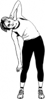
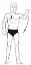

Социально-биологические основы физической культуры
Аннотация:
Организм как единая саморазвивающаяся и саморегулирующаяся биологическая система. Анатомо-морфологические особенности и основные физиологические функции организма. Функциональные системы организма. Внешняя среда и ее воздействие на организм и жизнедеятельность человека. Функциональная активность человека и взаимосвязь физической и умственной деятельности. Утомление при физической и умственной работе. Восстановление. Гипокинезия и гиподинамия. Средства физической культуры, обеспечивающие устойчивость к умственной и физической работоспособности
Организм как единая саморазвивающаяся и саморегулирующаяся биологическая система
Организм — слаженная единая саморегулирующаяся и саморазвивающаяся биологическая система, функциональная деятельность которой обусловлена взаимодействием психических, двигательных и вегетативных реакций на воздействия окружающей среды, которые могут быть как полезными, так и пагубными для здоровья. В основе жизнедеятельности организма лежит процесс автоматического поддержания жизненно важных факторов на необходимом уровне, всякое отклонение от которого ведет к немедленной мобилизации механизмов, восстанавливающих этот уровень (гомеостаз).
Гомеостаз — совокупность реакций, обеспечивающих поддержание или восстановление относительно динамического постоянства внутренней среды и некоторых физиологических функций организма человека (кровообращения, обмена веществ, терморегуляции и др.). Этот процесс обеспечивается сложной системой координированных приспособительных механизмов, направленных на устранение или ограничение факторов, воздействующих на организм как из внешней, так и из внутренней среды. Постоянство физико-химического состава внутренней среды поддерживается благодаря саморегуляции обмена веществ, кровообращения, пищеварения, дыхания, выделения и других физиологических процессов.
Организм — сложная биологическая система. Все его органы связаны между собой и взаимодействуют. Эти процессы происходят благодаря регуляторным механизмам, осуществляющим свою деятельность через нервную, кровеносную, дыхательную, эндокринную и другие системы организма.
Анатомо-морфологические особенности и основные физиологические функции организма
Организм человека состоит из органов и тканей. Органы построены из тканей, ткани состоят из клеток и межклеточного вещества. Клетка — элементарная, универсальная единица живой материи — имеет упорядоченное строение, обладает возбудимостью и раздражимостью, участвует в обмене веществ и энергии, способна к росту, регенерации (восстановлению), размножению, передаче генетической информации и приспособлению к условиям среды. Совокупность клеток и межклеточного вещества, имеющих общее происхождение, одинаковое строение и функции, называется тканью. По морфологическим и физиологическим признакам различают четыре вида ткани: эпителиальную соединительную, мышечную и нервную.
Орган — это часть целостного организма, обусловленная в виде комплекса тканей, сложившегося в процессе эволюционного развития и выполняющего определенные специфические функции. В создании каждого органа участвуют все четыре вида тканей, но лишь одна из них является рабочей. Так, для мышцы основная рабочая ткань — мышечная, для печени
— эпителиальная, для нервных образований — нервная. Совокупность органов, выполняющих общую для них функцию, называют системой органов (пищеварительная, дыхательная, сердечно-сосудистая, половая, мочевая и др.) и аппаратом органов (опорно-двигательный, эндокринный, вестибулярный и др.).
Функциональные системы организма
Скелет человека состоит из позвоночника, черепа, грудной клетки, поясов конечностей и скелета свободных конечностей. Все кости скелета соединены посредством суставов, связок и сухожилий. Суставы — подвижные соединения, область соприкосновения костей в которых покрыта суставной сумкой из плотной соединительной ткани, срастающейся с надкостницей сочленяющихся костей. Опорно-двигательный аппарат состоит из костей, связок, мышц, мышечных сухожилий. Основные функции — опора и перемещение тела и его частей в пространстве.
(непроизвольная) и поперечнополосатая (произвольная).
Гладкие мышцы расположены в стенках кровеносных сосудов и некоторых внутренних органах. Эти мышцы участвуют в транспортировке содержимого полых органов, например, пищи по кишечнику, в регуляции
кровяного давления, сужении и расширении зрачка и других непроизвольных движений внутри организма. Гладкие мышцы сокращаются под действием вегетативной системы. Для этого типа характерны медленные ритмические сокращения, не вызывающие утомления.
Поперечнополосатые мышцы — это все скелетные мышцы, которые обеспечивают многообразные движения тела. Скелетные мышцы входят в структуру опорно-двигательного аппарата, крепятся к костям скелета и при сокращении приводят в движение отдельные звенья скелета, рычаги. Они участвуют в удержании положения тела и его частей в пространстве, обеспечивают движения при ходьбе, беге, жевании, глотании, дыхании и т.д., вырабатывая при этом тепло. Скелетные мышцы обладают способностью возбуждаться под влиянием нервных импульсов. Возбуждение проводится до сократительных структур (миофибрилл), которые, сокращаясь, выполняют определенный двигательный акт — движение или напряжение.
В процессе мышечного сокращения потенциальная химическая энергия переходит в потенциальную механическую энергию напряжения и кинетическую энергию движения. Сокращение и напряжение мышцы осуществляется за счет энергии, освобождающейся при химических превращениях, которые происходят при поступлении в мышцу нервного импульса или нанесении на нее непосредственного раздражения. Химические превращения в мышце протекают как при наличии кислорода (в аэробных условиях), так и при его отсутствии (в анаэробных условиях). Первичным источником энергии для сокращения мышцы служит расщепление АТФ. Из каждой грамм-молекулы АТФ освобождается 10 000 кал. Запасы АТФ в мышце незначительны и, чтобы поддерживать их деятельность, необходим непрерывный ресинтез АТФ. Он происходит за счет энергии, получаемой при распаде креатинфосфата (КрФ) на креатин (Кр) и фосфорную кислоту (анаэробная фаза). При этом на каждый моль КрФ освобождается 46 кДж.
Эритроциты — красные кровяные клетки заполнены особым белком — гемоглобином, который способен образовывать соединение с кислородом (оксигемоглобин) и транспортировать его из легких к тканям, а из тканей переносить углекислый газ к легким, осуществляя таким образом дыхательную функцию. Лейкоциты — белые кровяные тельца, выполняют защитную функцию, уничтожая инородные тела и болезнетворные микробы (фагоцитоз). В 1 мл крови содержится 6—8 тыс. лейкоцитов. Тромбоциты (а их содержится в 1 мл от 100 до 300 тыс.) играют важную роль в сложном процессе свертывания крови. В плазме крови растворены гормоны, минеральные соли, питательные и другие вещества, которыми она снабжает ткани, а также содержатся продукты распада, удаленные из тканей.
Деятельность сердца заключается в ритмичной смене сердечных циклов, состоящих из трех фаз: сокращения предсердий, сокращения желудочков и общего расслабления сердца.
Пульс — волна колебаний, распространяемая по эластичным стенкам артерий в результате гидродинамического удара порции крови, выбрасываемой в аорту под большим давлением при сокращении левого желудочка. Частота пульса соответствует частоте сокращений сердца. В покое пульс здорового человека равен 60—70 удар/мин.
Кровяное давление создается силой сокращения желудочков сердца и упругостью стенок сосудов. Оно измеряется в плечевой артерии. Различают максимальное (или систолическое) давление, которое создается во время сокращения левого желудочка (систолы), и минимальное (или диастолическое) давление, которое отмечается во время расслабления левого желудочка (диастолы). В норме у здорового человека в возрасте 18— 40 лет в покое кровяное давление равно 120/70 мм рт.ст. (120 мм систолическое•давление, 70 мм — диастолическое).
Выделительную систему образуют почки, мочеточники и мочевой пузырь, которые обеспечивают выделение из организма с мочой вредных продуктов обмена веществ (до 75%). Кроме того, некоторые продукты обмена выделяются через кожу (с секретом потовых и сальных желез), легкие (с выдыхаемым воздухом) и через желудочно-кишечный тракт. С помощью почек в организме поддерживается кислотно-щелочное равновесие (рН), необходимый объем воды и солей, стабильное осмотическое давление (т.е. гомеостаз).
Внешняя среда и ее воздействие на организм и жизнедеятельность человека
На человека воздействуют различные факторы окружающей среды. При изучении многообразных видов его деятельности не обойтись без учета влияния природных факторов (барометрическое давление, газовый состав и влажность воздуха, температура окружающей среды, солнечная радиация — так называемая физическая окружающая среда), биологических факторов растительного и животного окружения, а также факторов социальной среды с результатами бытовой, хозяйственной, производственной и творческой деятельности человека.
Из внешней среды в организм поступают вещества, необходимые для его жизнедеятельности и развития, а также раздражители (полезные и вредные), которые нарушают постоянство внутренней среды. Организм путем взаимодействия функциональных систем всячески стремится сохранить необходимое постоянство своей внутренней среды.
Природные и социально-биологические факторы, влияющие на
организм человека, неразрывно связаны с вопросами экологического характера. Экология — это и область знания, и часть биологии, и учебная дисциплина, и комплексная наука. Человек зависит от условий среды обитания точно также, как природа зависит от человека. Между тем влияние производственной деятельности на окружающую природу (загрязнение атмосферы, почвы, водоемов отходами производства, вырубка лесов, повышенная радиация в результате аварий и нарушении технологий) ставит под угрозу существование самого человека.
Функциональная активность человека и взаимосвязь физической и умственной деятельности
Функциональная активность человека характеризуется различными двигательными актами: сокращением мышцы сердца, передвижением тела в пространстве, движением глазных яблок, глотанием, дыханием, а также двигательным компонентом речи, мимики.
Понятие “труд” включает различные его виды. Между тем существуют два основных вида трудовой деятельности человека — физический и умственный труд и их промежуточные сочетания.
Физический труд — это вид деятельности человека, особенности которой определяются комплексом факторов, отличающих один вид деятельности от другого, связанного с наличием каких-либо климатических, производственных, физических, информационных и тому подобных факторов. Выполнение физической работы всегда связано с определенной тяжестью труда, которая определяется степенью вовлечения в работу скелетных мышц и отражающая физиологическую стоимость преимущественно физической нагрузки. По степени тяжести различают физически легкий труд, средней тяжести, тяжелый и очень тяжелый. Критериями оценки тяжести труда служат эргометрические показатели (величины внешней работы) и физиологические (уровни энергозатрат, частота сердечных сокращений, иные функциональные изменения).
Умственный труд — это деятельность человека по преобразованию сформированной в его сознании концептуальной модели действительности путем создания новых понятий, суждений, умозаключений, а на их основе — гипотез и теории. Результат умственного труда — научные и духовные ценности или решения, которые посредством управляющих воздействий на орудия труда используются для удовлетворения общественных или личных потребностей.
Одна из важнейших характеристик личности — интеллект. Другой, не менее важной стороной личности является эмоционально-волевая сфера, темперамент и характер. Возможность регулировать формирование личности достигается тренировкой, упражнением и воспитанием. А систематические занятия физическими упражнениями.
Ежедневная утренняя зарядка, прогулка или пробежка на свежем воздухе благоприятно влияют на организм, повышают тонус мышц,
улучшают кровообращение и газообмен, а это положительно влияет на повышение умственной работоспособности студентов.
Утомление при физической и умственной работе. Восстановление
Утомление — это функциональное состояние, временно возникающее под влиянием продолжительной и интенсивной работы и приводящее к снижению ее эффективности. Утомление проявляется в том, что уменьшается сила и выносливость мышц, ухудшается координация движений, возрастают затраты энергии при выполнении работы одинакового характера, замедляется скорость переработки информации, ухудшается память, затрудняется процесс сосредоточения и переключения внимания, усвоения теоретического материала. Утомление связано, с ощущением усталости, и в то же время оно служит естественным сигналом возможного истощения организма и предохранительным биологическим механизмом, защищающим его от перенапряжения.
Утомление наступает при физической и умственной деятельности. Оно может быть острым, т.е. проявляться в короткий промежуток времени, и хроническим, т.е. носить длительный характер (вплоть до нескольких месяцев): общим, т.е. характеризующим изменение функций организма в целом, и локальным, затрагивающим какую-либо ограниченную группу мышц, орган, анализатор.
Различают две фазы утомления: компенсированную (когда нет явно выраженного снижения работоспособности из-за того, что включаются резервные возможности организма) и некомпенсированную (когда резервные мощности организма исчерпаны и работоспособность явно снижается). Систематическое выполнение работы на фоне недовосстановления, непродуманная организация труда, чрезмерное нервно-психическое и физическое напряжение могут привести к переутомлению, а, следовательно, к перенапряжению нервной системы, обострениям сердечно-сосудистых заболеваний, гипертонической и язвенным болезням, снижению защитных свойств организма. Физиологической основой всех этих явлений является нарушение баланса возбудительно-тормозных нервных процессов. Умственное переутомление особенно опасно для психического здоровья человека, оно связано со способностью центральной нервной системы долго работать с перегрузками, а это в конечном итоге может привести к развитию запредельного торможения, к нарушению слаженности взаимодействия вегетативных функций.
Устранить утомление возможно, повысив уровень общей и специализированной тренированности организма, оптимизировав его физическую, умственную и эмоциональную активность.
Профилактике и отдалению умственного утомления способствует мобилизация тех сторон психической активности и двигательной деятельности, которые не связаны с теми, что привели к утомлению. Необходимо активно отдыхать, переключаться на другие виды деятельности,
использовать арсенал средств восстановления.
Восстановление — процесс, происходящий в организме после прекращения работы и заключающийся в постепенном переходе физиологических и биохимических функций к исходному состоянию. Время, в течение которого происходит восстановление физиологического статуса после выполнения определенной работы, называют восстановительным периодом.
Гипокинезия и гиподинамия
Гипокинезия — особое состояние организма, обусловленное недостаточностью двигательной активности. В ряде случаев это состояние приводит к гиподинамии. Гиподинамия — совокупность отрицательных морфофункциональных изменений в организме вследствие длительной гипокинезни. Это атрофические изменения в мышцах, общая физическая детренированность, детренированность сердечно-сосудистой системы, понижение ортостатической устойчивости, изменение водно-солевого баланса, системы крови, деминерализация костей и т.д. В конечном счете, снижается функциональная активность органов и систем, нарушается деятельность регуляторных механизмов, обеспечивающих их взаимосвязь, ухудшается устойчивость к различным неблагоприятным факторам; уменьшается интенсивность и объем афферентной информации, связанной с мышечными сокращениями, нарушается координация движений, снижается тонус мышц, падает выносливость и силовые показатели.
Средства физической культуры, обеспечивающие устойчивость к умственной и физической работоспособности
Основное средство физической культуры — физические упражнения. Существует физиологическая классификация упражнений, в которой вся многообразная мышечная деятельность объединена в отдельные группы упражнений по физиологическим признакам.
Устойчивость организма к неблагоприятным факторам зависит от врожденных и приобретенных свойств. Физическая тренировка путем совершенствования физиологических механизмов повышает устойчивость к перегреванию, переохлаждению, гипоксии, действию некоторых токсических веществ, снижает заболеваемость и повышает работоспособность. У людей, которые систематически и активно занимаются физическими упражнениями, повышается психическая, умственная и эмоциональная устойчивость при выполнении напряженной умственной или физической деятельности.
К числу основных физических (или двигательных) качеств, обеспечивающих высокий уровень физической работоспособности человека, относят силу, быстроту и выносливость, которые проявляются в определенных соотношениях в зависимости от условий выполнения той или иной двигательной деятельности, ее характера, специфики, продолжительности, мощности и интенсивности. К названным физическим
качествам следует добавить гибкость и ловкость, которые во многом определяют успешность выполнения некоторых видов физических упражнений.
Две большие группы физических упражнений, связанные со стандартностью или нестандартностью движений, в свою очередь, делятся на упражнения (движения) циклического характера (ходьба, бег, плавание, гребля, передвижения на коньках, лыжах, велосипеде и т.п.) и упражнения ациклического характера (упражнения без обязательной слитной повторяемости определенных циклов, имеющих четко выраженные начало и завершение движения: прыжки, метания, гимнастические и акробатические элементы, поднимание тяжестей). Общее для движений циклического характера состоит в том, что все они представляют работу постоянной и переменной мощности с различной продолжительностью.
Есть также большая группа физических упражнений, особенность которых в нестандартности, непостоянстве условий их выполнения, в меняющейся ситуации, требующей мгновенной двигательной реакции (единоборства, спортивные игры).
К средствам физической культуры относятся не только физические упражнения, но и оздоровительные силы природы (солнце, воздух и вода), гигиенические факторы (режим труда, сна, питания, санитарно- гигиенические условия). Использование оздоровительных сил природы способствует укреплению и активизации защитных сил организма стимулирует обмен веществ и деятельность физиологических систем и отдельных органов.
Аннотация: Здоровье человека как ценность и факторы его определяющие. Взаимосвязь общей культуры студента и его образа жизни. Здоровый образ жизни и его составляющие. Личное отношение к здоровью как условие формирования здорового образа жизни. Основные требования к организации здорового образа жизни. Физическое самовоспитание и самосовершенствование в здоровом образе жизни.
Здоровье - бесценное достояние не только каждого человека, но и всего общества. Здоровье помогает нам выполнять наши планы, успешно решать основные жизненные задачи, преодолевать трудности, а если придется, то и значительные перегрузки. Хорошее здоровье, разумно сохраняемое и укрепляемое самим человеком, обеспечивает ему долгую и активную жизнь .
Научные данные свидетельствуют о том, что у большинства людей при соблюдении ими гигиенических правил есть возможность жить до 100 лет и более.
К сожалению, многие люди не соблюдают самых простейших, обоснованных наукой норм здорового образа жизни. Одни становятся жертвами малоподвижности (гиподинамии), вызывающей преждевременное старение, другие излишествуют в еде с почти неизбежным в этих случаях развитием ожирения, склероза сосудов, а у некоторых - сахарного диабета, третьи не умеют отдыхать, отвлекаться от производственных и бытовых забот, вечно беспокойны, нервны, страдают бессонницей, что в конечном итоге приводит к многочисленным заболеваниям внутренних органов. Некоторые люди, поддаваясь пагубной привычке к курению и алкоголю, активно укорачивают свою жизнь.
Здоровье и его компоненты.
Существует много определений этого понятия, смысл которых определяется профессиональной точкой зрения авторов. По определению Всемирной Организации Здравоохранения принятому в 1948 г.: «здоровье - это состояние физического, духовного и социального благополучия, а не только отсутствие болезней и физических дефектов».
С физиологической точки зрения определяющими являются следующие формулировки:
индивидуальное здоровье человека - естественное состояние организма на фоне отсутствия патологических сдвигов, оптимальной связи со средой, согласованности всех функций (Г. З. Демчинкова, Н. Л. Полонский);
здоровье представляет собой гармоничную совокупность структурно-функциональных данных организма, адекватных
окружающей среде и обеспечивающих организму оптимальную жизнедеятельность, а также полноценную трудовую жизнедеятельность;
индивидуальное здоровье человека - это гармоническое единство всевозможных обменных процессов в организме, что создает условия для оптимальной жизнедеятельности всех систем и подсистем организма (А. Д. Адо);
здоровье - это процесс сохранения и развития биологических, физиологических, психологических функций, трудоспособности и социальной активности человека при максимальной продолжительности его активной жизни (В. П. Казначеев).
В настоящее время принято выделять следующие компоненты здоровья (Петленко В.И. и Давиденко Д.Н., 1998):
Соматическое - текущее состояние органов и систем органов человеческого организма.
Физическое - уровень развития и функциональных возможностей органов и систем организма. Основа физического здоровья - это морфологические и функциональные резервы клеток, тканей, органов и систем органов, обеспечивающие приспособление организма к воздействию различных факторов.
Психическое - состояние психической сферы человека. Основу психического здоровья составляет состояние общего душевного комфорта, обеспечивающее адекватную регуляцию поведения.
Сексуальное - комплекс соматических, эмоциональных, интеллектуальных и социальных аспектов сексуального существования человека, позитивно обогащающих личность, повышающих коммуникабельность человека и его способность к любви.
Нравственное - комплекс характеристик мотивационной и потребностно-информационной основы жизнедеятельности человека. Основу нравственного компонента здоровья человека определяет система ценностей, установок и мотивов поведения индивида в социальной среде.
В обобщенном и несколько упрощенном виде критериями здоровья являются: для соматического и физического здоровья - я могу; для психического здоровья - я хочу; для нравственного здоровья - я должен.
От чего зависит здоровье?
Здоровье человека - результат сложного взаимодействия социальных, средовых и биологических факторов. Считается, что вклад различных влияний в состояние здоровья следующий:
наследственность - 20%;
окружающая среда - 20%;
уровень медицинской помощи - 10%;
образ жизни - 50%.
В развернутом варианте эти цифры, по мнению российских ученых, выглядят так:
человеческий фактор - 25% (физическое здоровье - 10%,
психическое здоровье - 15%);
экологический фактор - 25% (экзоэкология - 10%,
эндоэкология - 15%);
социально-педагогический фактор - 40% (образ жизни: материальные условия труда и быта - 15%, поведение, режим жизни, привычки - 25%);
медицинский фактор - 10%.
Составляющие здорового образа жизни
Здоровый образ жизни включает в себя следующие основные элементы: рациональный режим труда и отдыха, оптимальный двигательный режим, личную гигиену, искоренение вредных привычек, закаливание, рациональное питание и т.п.
Рациональное питание, построенное на научных основах, обеспечивает нормальное развитие организма. Оно служит, предупреждая многие болезни, мощным профилактическим средством. Ежедневный рацион человека должен быть строго сбалансирован. Он должен содержать в достаточном количестве и оптимальном соотношении все необходимые организму вещества (белки, жиры, углеводы, витамины и минералы. А для этого ему нужно быть разнообразным. В него должны входить продукты самых разных групп: зерновые, стручковые плоды, продукты животного происхождения (нежирные), овощи и фрукты.
Люди питаются по-разному, однако существует ряд требований которые должны учитываться всеми. Прежде всего пища должна содержать в нужном количестве и в определенных соотношениях все основные питательные вещества. Нельзя допускать переедания: оно ведет к ожирению. Весьма вредно для здоровья и питание с систематическим введением непомерных количеств какого-либо одного продукта или пищевых веществ одного класса (например, обильное введение жиров или углеводов, повышенное потребление поваренной соли).
Здоровому человеку лучше питаться 3-4 раза в сутки. Вредно во время еды читать, решать сложные и ответственные задачи. Нельзя торопиться, есть, обжигаясь холодной пищей, глотать большие куски
пищи, не пережевывая. Плохо влияет на организм систематическая еда всухомятку, без горячих блюд. Человеку, пренебрегающему режимом питания, со временем угрожает развитие таких тяжелых болезней пищеварения, как, например, язвенная болезнь и др.
Систематический, посильный, и хорошо организованный процесс умственного труда чрезвычайно благотворно влияет на нервную систему, сердце и сосуды, костно-мышечный аппарат – на весь организм человека.
Чередование физических и умственных нагрузок полезно для здоровья. Человек, много времени проводящий в помещении, должен хотя бы часть времени отдыха проводить на свежем воздухе. Городским жителям желательно отдыхать вне помещений - на прогулках по городу и за городом, в парках, на стадионах, в турпоходах на экскурсиях, за работой на садовых участках и т. п. Постоянная тренировка в процессе труда укрепляет наше тело.
Отдых после работы вовсе не означает состояния полного покоя. Лишь при очень большом утомлении может идти речь о пассивном отдыхе. Желательно, чтобы характер отдыха был противоположен характеру работы человека («контрастный» принцип построения отдыха). Во время работы через каждые 50 минут сосредоточенного труда отдыхать 10 минут (сделать легкую гимнастику, проветрить комнату, пройтись по коридору или лестнице) и т.п. Необходимо избегать переутомления и однообразного труда.
Режим сна. Особое внимание нужно уделять сну - основному и ничем не заменимому виду отдыха. Постоянное недосыпание опасно тем, что может вызвать истощение нервной системы, ослабление защитных сил организма, снижение работоспособности, ухудшение самочувствия.
Великий русский физиолог И. П. Павлов указывал, что сон - это своего рода торможение, которое предохраняет нервную систему от чрезмерного напряжения и утомления. Сон должен быть достаточно длительным и глубоким. Если человек мало спит, то он встает утром раздраженным, разбитым, а иногда с головной болью.
В среднем норма сна составляет около 8 часов. Систематическое недосыпание приводит к нарушению нервной деятельности, снижению работоспособности, повышенной утомляемости, раздражительности
Чтобы создать условия для нормального, крепкого и спокойного
сна необходимо за 1-1,5ч. до сна прекратить напряженную умственную работу. Ужинать надо не позднее, чем за 2-2,5ч. до сна. Спать следует в хорошо проветренном помещении, неплохо приучить себя спать при открытой форточке, а в теплое время года с открытым окном. В помещении нужно выключить свет и установить тишину. Желательно ложиться спать в одно и то же время - это способствует быстрому засыпанию.
Для работников умственного труда систематическое занятие физкультурой и спортом приобретает исключительное значение. Известно, что даже у здорового и нестарого человека, если он не тренирован, ведет «сидячий» образ жизни и не занимается физкультурой, при самых небольших физических нагрузках учащается дыхание, появляется сердцебиение. Напротив, тренированный человек легко справляется со значительными физическими нагрузками. Сила и работоспособность сердечной мышцы, главного двигателя кровообращения, находится в прямой зависимости от силы и развития всей мускулатуры. Поэтому физическая тренировка, развивая мускулатуру тела, в то же время укрепляет сердечную мышцу. У людей с неразвитой мускулатурой мышца сердца слабая, что выявляется при любой физической работе.
Ежедневная утренняя гимнастика - обязательный минимум физической тренировки. Она должна стать для всех такой же привычкой, как умывание по утрам. Полезно отправляться по утрам на работу пешком и гулять вечером после работы.
Для людей, ведущих «сидячий» образ жизни, особенно важны физические упражнения на воздухе (ходьба, прогулка). Систематическая ходьба благотворно влияет на человека, улучшает самочувствие, повышает работоспособность. Нагрузку можно точно дозировать и постепенно, планомерно наращивать по темпу и объему. Прогулки лучше выполнять по принципу кроссовой ходьбы: 0,5 -1 км прогулочным медленным шагом, затем столько же - быстрым спортивным шагом и т.д. При отсутствии других физических нагрузок ежедневная минимальная норма нагрузки только ходьбой для молодого мужчины составляет 10-15 км, меньшая нагрузка связана с развитием гиподинамии. Таким образом, ежедневное пребывание на
свежем воздухе в течение 1-1,5 часа является одним из важных компонентов здорового образа жизни.
Очень многие люди начинают свое оздоровление с отказа от курения, которое считается одной из самых опасных привычек современного человека. Недаром медики считают, что с курением непосредственно связаны самые серьезные болезни сердца, сосудов, легких. Курение не только подтачивает здоровье, но и забирает силы в самом прямом смысле. Как установили специалисты, через 5-9 минут после выкуривания одной только сигареты мускульная сила снижается на 15%, Отнюдь не стимулирует курение и умственную деятельность.
Курение является частой причиной возникновения опухолей полости рта, гортани, бронхов и легких. Постоянное и длительное курение приводит к преждевременному старению. Нарушение питания тканей кислородом, спазм мелких сосудов делают характерной внешность курильщика (желтоватый оттенок белков глаз, кожи, преждевременное увядание), а изменение слизистых оболочек дыхательных путей влияет на его голос (утрата звонкости, сниженный тембр, хриплость).
Следующая непростая задача – преодоление пьянства и алкоголизма
Установлено, что алкоголизм действует разрушающе на все системы и органы человека. В результате систематического потребления алкоголя развивается пристрастие к нему:
потеря чувства меры и контроля над количеством потребляемого алкоголя;
нарушение деятельности центральной и периферической нервной системы (психозы, невриты и т.п.) и функций внутренних органов. Изменение психики, возникающее даже при эпизодическом приеме алкоголя (возбуждение, утрата сдерживающих влияний, подавленность и т.п.), обуславливает частоту самоубийств, совершаемых в состоянии опьянения.
Особенно вредное влияние алкоголизм оказывает на печень: при длительном систематическом злоупотреблении алкоголем происходит развитие алкогольного цирроза печени. Алкоголизм - одна из частых причин заболевания поджелудочной железы (панкреатита, сахарного диабета).
Алкоголизм, как ни одно другое заболевание, обуславливает целый комплекс отрицательных социальных последствий, которые выходят далеко за рамки здравоохранения и касаются, в той или иной степени, всех сторон жизни современного общества. Алкоголизм и связанные с ним болезни как причина смерти уступают лишь сердечно-сосудистым заболеваниям и раку.
Закаливание. Для эффективного оздоровления и профилактики болезней необходимо тренировать и совершенствовать в первую очередь самое ценное качество - выносливость в сочетании с закаливанием и другими компонентами здорового образа жизни, что обеспечит надежный щит против многих болезней.
Широко известны различные способы закаливания - от воздушных ванн до обливания холодной водой. Полезность этих процедур не вызывает сомнений. С незапамятных времен известно, что ходьба босиком - замечательное закаливающее средство. Зимнее плавание - высшая форма закаливания. Чтобы ее достичь, человек должен пройти все ступени закаливания.
Эффективность закаливания возрастает при использовании специальных температурных воздействий и процедур. Основные принципы их правильного применения должны знать все: систематичность и последовательность; учет индивидуальных особенностей, состояния здоровья и эмоциональные реакции на процедуру.
Закаливание - мощное оздоровительное средство. Оно позволяет избежать многих болезней, продлить жизнь на долгие годы, сохранить высокую работоспособность. Закаливание оказывает общеукрепляющее действие на организм, повышает тонус нервной системы, улучшает кровообращение, нормализует обмен веществ.
Неодинаковые условия жизни, труда и быта, индивидуальные различия людей не позволяют рекомендовать один вариант суточного режима для всех. Однако его основные положения должны соблюдаться всеми: выполнение различных видов деятельности в строго определенное время, правильное чередование работы и отдыха, регулярное питание.
Регулярные физические упражнения при любой занятости необходимы человеку для нормальной жизнедеятельности, надежной работы всех его систем. Эти занятия также способствуют активному отдыху и повышению умственной работоспособности, снимают психическое напряжение после трудового дня.
Научно доказано, что движение, посильная физическая работа и упражнения оказывают положительное влияние на все системы и органы, стимулирующее воздействуют на железы внутренней секреции. Результаты многих научных исследований доказывают, что активные люди живут более полной жизнью. Их отличает выносливость, жизнерадостность, подтянутость, невосприимчивость к болезням и хорошее самочувствие.
Обратите внимание на наиболее популярные и эффективные рекомендации экспертов по вопросам здоровья и красоты.
Какой вид физической нагрузки выбрать для себя, чтобы занятия способствовали укреплению здоровья, были полезными для тела и ума, служили эмоциональной разрядкой после напряженного трудового дня.
Самостоятельные занятия любым видом физических упражнений будут способствовать повышению функциональных возможностей организма и физической подготовке человека. При этом важно получать оптимальную физическую нагрузку и избавляться от лишних калорий.
Наш организм растрачивает энергию для выполнения разнообразных движений, но в различных количествах. Следует знать, чем большее количество мышц вовлекается в работу тем или иным видом физических упражнений, тем выше нагрузка на сердечно-сосудистую систему и тем меньше времени требуется для того чтобы достичь определенных затрат энергии.
Приводим для примера некоторые из видов двигательной деятельности и энергозатраты при их выполнении в течение 30 минут.
Бег вверх по ступенькам
Ступеньки в доме, офисном здании, на стадионе — оказывается, один из наиболее эффективно сжигающих жир «тренажеров» всегда под рукой.
Поднимитесь бегом по ступенькам (начните с трех лестничных пролетов), не пропуская ни одной. Медленным шагом спуститесь обратно. Сделайте еще пять таких сетов (в перспективе увеличьте их количество до десяти). Такая аэробно-силовая тренировка быстро укрепит мышцы ног и избавит вас от лишнего веса, а также повысит выносливость сердца и легких. Когда тело с легкостью будет выдерживать несколько подъемов бегом, добавьте отягощения: возьмите в руки бутылочки с водой или сумки с продуктами. И вы увидите, как скоро бедра станут стройными, ягодицы упругими, а икроножные мышцы рельефными.
За 30 минут бега по ступенькам сжигается 450 калорий.
Бег
Во время бега задействованы практически все группы мышц: ног, спины, плечевого пояса, рук и брюшного пресса. Именно благодаря одновременному включению в работу многих групп мышц бег дает высокий тренировочный эффект.
При низкой физической подготовленности бег требует определенных усилий. Новичкам необходимо постепенно увеличивать нагрузку по продолжительности бега, при этом постоянно ориентируясь на оптимальные показатели частоты сердечных сокращений. Те, кто пробегает километр, быстрее 6 минут, можно считать, занимаются бегом, а те, кто бежит медленнее бегом трусцой (джоггингом).
Преимущества: заниматься бегом можно в любое время и в любом месте, затрачивая на это совсем немного времени. Это, с одной стороны, возможность уединения и покоя, позволяющие отвлечься от повседневных дел, а с другой, возможность регулярно встречаться для совместных занятий бегом с приятным партнером. Недостатки: бег дает большую нагрузку на суставы при ударах о грунт. Однако общее давление, которому подвергаются кости и суставы при беге, делают их более крепкими и сильными. Чтобы повысить расход калорий, следует увеличивать скорость.
При скорости 16 км/час за 30 минут сжигается375 ккал, а скорости
8 км/час —285 ккал.
Плавание
Плавание — этот вид аэробных упражнений великолепно развивает сердце и легкие, общую подвижность и силу, повышает выносливость организма. При плавании в работу вовлекаются все основные мышцы тела, что в результате дает большой общий оздоровительный эффект. Кроме того, пловцы меньше страдают от травм, чем бегуны, потому что вода смягчает давление на суставы и кости.
Спокойное плавание рекомендуется для выздоравливающих, полезно пожилым, беременным, людям с избыточным весом, и с физическими недостатками. В этом случае следует избегать погружения в холодную воду и слишком сильного напряжения, нежелательного для слабого сердца. Во время пребывания в воде снижается нагрузка на все суставы.
При плавании быстрым кролем происходит сжигание жира благодаря разности температур воды и тела и беспрерывным движениям в аэробном режиме. Работают все мышцы тела. Чтобы усилить эффект — чередуйте плавание различными стилями, увеличивая скорость и используя отягощения на руках и ногах.
За 30 минут сжигается 375 ккал.
Прыжки через скакалку
Прыжки через скакалку — эффективная форма занятий физическими упражнениями. Это упражнение способствует увеличению потребления кислорода организмом и лучше (быстрее) влияет на сердечно-сосудистую систему, чем даже занятия медленным бегом. Дело в том, что нагрузку в прыжках нельзя снизить ниже определенного уровня: ведь невозможно вертеть скакалку медленнее, чем с частотой 60 –70 оборотов в минуту.
При кажущейся легкости этот вид двигательной активности оказывает достаточно сильное воздействие на организм. Прыжки через скакалку воспитывают крепкое сердце и придают красивую форму икрам и бедрам. Кроме того, улучшается координация движений, появляется грациозность.
Старайтесь прыгать в удобном темпе, можно босиком или в кроссовках. Держите спину прямой, поднимая ноги над опорой ровно настолько, чтобы перепрыгнуть через скакалку, а затем мягко приземлиться на переднюю часть стопы. Чтобы предупредить возникновение болей и травм голени и стопы, не забывайте об упражнениях с вращением стопы, на растягивание икроножных мышц. Если вы находитесь в плохой физической форме, предварительно выполните легкий бег на месте или бег трусцой.
Чтобы стимулировать процесс сжигания жира, старайтесь прыгать непрерывно в течение 15–30 минут. Отдача будет больше, если не выходить за пределы аэробной зоны пульса (135 уд/мин.) и добавить время.
За 30 минут сжигается 270 ккал.
Езда на велосипеде
Это хорошее средство для укрепления ног, сердца и легких в любом возрасте. Велосипед с обычным высоким рулем дает возможность сохранить правильную осанку и делает катание на нем полезным для мышц спины. Езда на велосипеде очень полезна для людей с избыточным весом, кто давно не занимался никаким видом спорта. Преимущества: езда на велосипеде позволяет бережно относиться к суставам. Как и во время бега, вы можете сами определять скорость и продолжительность тренировки.
Этот вид спорта — аэробная жиросжигающая нагрузка. Скорость меньше
15 км в час имеет очень низкую аэробную стоимость. Хороший тренировочный эффект достигается при скорости более 20 км в час. Для начинающих тренировки длятся 25–30 минут, на продвинутом уровне — час и более. По возможности чередуйте нагрузку во время поездки: ровная дорога, подъем в гору, спуск с холма, пересеченная местность. Крутите педали с большим усилием, чтобы подкорректировать мышцы ног и
брюшного пресса и избавиться от лишних калорий. Пульс должен составлять
135 ударов в минуту.
За 30 минут сжигается 267 ккал.
Пляжный волейбол
В игре с мячом на пляже лишние килограммы «плавятся» на глазах. Эффект жиросжигания достигается за счет пауз активного восстановления и тренировки в условиях усиленного потребления кислорода. Быстро приходят в форму ноги, спина, руки, грудь и брюшной пресс. Специалисты рекомендуют — увеличить скорость и меньше отдыхать во время игры — успех будет больше.
За 30 минут сжигается примерно 263 ккал.
Аэробные танцы
Аэробные физические упражнения необходимы для тренировки сердечно- сосудистой системы, сжигания калорий и постепенного снижения веса. Многим людям заниматься под музыку доставляет большое удовольствие, чем бег трусцой в одиночку. Занятия танцевальной гимнастикой, различные импровизации под музыку в современных ритмах способствуют расширению двигательного арсенала, повышению двигательной активности. Они отвлекают внимание от повседневных забот, создают условия для эмоциональной разрядки, позволяют изменить самооценку и отношение к себе.
Танцуя можно получить даже лучшие результаты, чем при ходьбе. Танцы даже по 2–3 минуты вечером задействуют мышцы всего тела, улучшают координацию и повышают уверенность в себе! Для оптимального жиросжигания выполняйте движения с полной амплитудой и задействуйте в них все тело.
За 30 минут сжигается 242 ккал.
Настольный теннис
Игра в пинг-понг — веселый спокойный способ сжечь калории и заодно приобрести полезные для жизни навыки: стать более ловким и повысить быстроту реакции. Хорошо укрепляются мышцы рук, предплечья больше не будут некрасиво провисать, грудь станет упругой, пресс обозначится четче. Не так сильно, но все же, нагружаются икроножные мышцы и верхняя часть спины. Сыграйте несколько партий подряд вместо одной — и расход калорий будет больше.
За 30 минут сжигается примерно 242 ккал.
Ходьба
При ходьбе с активным движением рук работают все группы мышц: ноги, спина, плечевой пояс, руки и брюшной пресс. Активные движения в ходьбе позволяют усилить дыхательные функции и соответственно приток
кислорода во все органы и ткани, повысить жизненные силы и функциональные возможности организма в любом возрасте.
Преимущества: оздоровительной ходьбой может заниматься кто угодно и где угодно, независимо от возраста и пола. При ходьбе именно начинающим легко дозировать правильно нагрузку. При этом суставы испытывают меньшую нагрузку, чем при беге. Недостатки: она занимает в три раза больше времени для достижения такого же аэробного эффекта как бег. А также при определенных обстоятельствах вы можете воспринимать ходьбу как монотонное занятие.
Чтобы стимулировать процесс сжигания жира шагайте размеренно, активно помогайте себе корпусом и руками. Для большего эффекта чередуйте высокоинтенсивные и низкоинтенсивные интервалы (10 минут со средней скоростью, еще 10 минут – в быстром темпе).
За 30 минут при скорости 6 км/час сжигается195 ккал.
Бадминтон
Бадминтон предполагает разнообразные движения рук, ног и туловища. Этот динамичный вид спорта основан на быстрых, резких, хлестких движениях, прыжках, выпадах и стремительных перемещениях. Задействуются мышцы ног, спины, плечевого пояса, рук и брюшного пресса. Эффект жиросжигания усиливается за счет пауз активного восстановления: это позволяет вести работу в условиях повышенного потребления кислорода и стимулирует расход калорий. Чтобы сильнее загрузить тело, проводите игру на более высокой скорости и силе ударов. Старайтесь двигаться разнообразнее, меньше отдыхайте — таким образом удастся сжечь большее количество калорий.
За 30 минут сжигается 145 ккал.
Заниматься можно любым видом аэробных упражнений полезных для здоровья. Так как во всех этих видах оздоровительный эффект аэробных нагрузок базируется на увеличении работоспособности дыхательной и сердечно-сосудистой систем под воздействием систематических занятий. Единственное требование — интенсивность и длительность аэробных упражнений должны обеспечивать аэробный эффект. Основные виды упражнений, которые удовлетворяют требованиям аэробики — обогащение организма кислородом — являются следующие (в порядке снижения значимости): ходьба на лыжах, плавание, бег, езда на велосипеде, ходьба.
Выбор физических упражнений для самостоятельных занятий зависит от ваших возможностей, желания и интересов. Просто нужно искать то, что больше всего нравится вам и подходит именно для вас. Руководствуйтесь в первую очередь здравым смыслом.
Наибольшее влияние на организм оказывают те упражнения, в которых физическая нагрузка продолжается длительное время и в работу вовлечено большое количество мышц. Именно длительные циклические упражнения, выполняемые с относительно невысокой интенсивностью, рекомендуются для использования их в оздоровительных целях.
Исследования показали, что регулярные энергичные упражнения могут улучшить потребление организмом О2, снизить значение ЧСС в покое, уменьшить кровяное давление и усилить эффективность функционирования сердца и легких. Установлено, что физическая активность приносит прямую пользу с медицинской точки зрения.
Увеличивает число и размеры кровеносных сосудов в сердце и мышцах;
Повышает эластичность кровеносных сосудов, уменьшает вероятность разрыва при возрастании давления;
Увеличивается эффективность тренируемых мышц, делая их способными лучше использовать кислород, переносимый кровью;
Увеличивает эффективность работы сердца, повышая его способность перекачивать кровь;
Повышает устойчивость к стрессам;
Снижает уровень холестерина и триглицеридов, уменьшая вероятность образования отложений в артериях;
Понижает высокое давление, уменьшая риск сердечных приступов и инсультов.
Помогает сжечь излишек калорий.
Ходьба на лыжах
Ходьба на лыжах занимает одно из первых мест среди всех видов спорта по своим оздоровительно–гигиеническим достоинствам. Она дает наибольший аэробный эффект, так как в работе задействованы все группы мышц, а занятия при пониженной температуре создают дополнительную нагрузку на организм.
Лыжный спорт всесторонне развивает и укрепляет организм человека. Систематические занятия этим видом спорта укрепляют мускулатуру тела, делая фигуру стройной и гармоничной, и развивают физические качества – силу и выносливость. Хорошо развивается и грудная клетка, и легкие, укрепляется сердечная мышца и улучшается эластичность кровеносных сосудов. Сильный стимулирующий эффект оказывают занятия лыжным спортом на обмен веществ, что особенно полезно для людей с повышенным весом. Не меньший положительный эффект занятия лыжным спортом оказывают и на нервно-психическую сферу человека.
Научиться ходить на лыжах можно в любом возрасте, но чем раньше, тем лучше. Если вы здоровы, то можете долго ходить на лыжах, а почувствовав усталость можно прекратить движение и отдохнуть. Проверьте, чтобы крепления были правильно поставлены и хорошо держали ботинки. Однако, катание с гор и ходьба на лыжах требуют определенной физической подготовки. Чтобы избежать боли в мышцах и причин получить травму рекомендуется физически подготовить себя за 4-6 недель до начала сезона. Следует выполнять упражнения для укрепления основных мышц тела – туловища, ног и рук, научиться сохранять равновесие, устойчивость и вставать после падения.
Ходьба и бег — универсальные аэробные упражнения
Движения при ходьбе помогают размять мышцы, усилить кровоток, улучшить питание сердца, легких, мозга. Особенно полезна ходьба для лиц с ослабленным здоровьем, для тех, кто оздоровительным бегом никогда не занимался. Рекомендуется применять ходьбу как средство восстановления
«былой формы», с целью развития выносливости, совершенствования физического состояния, для профилактики заболеваний и снятия напряжения после трудового дня.
При длительном и интенсивном занятии ходьбой, пульс и дыхание учащаются, в легкие поступает большее количество воздуха, кислород транспортируется по кровеносным сосудам к сердцу, мышцам и тканям с большей интенсивностью. Втянутые в такую дополнительную работу легкие, сосуды и сердце тренируются, восстанавливают свои функции, тканевой
обмен улучшается. Чем больше способность сердца обеспечить свою ткань кислородом, тем менее вероятны ишемическая болезнь, приступы стенокардии и инфаркт миокарда.
Полезно знать, что при ходьбе со скоростью 6 км/ч за 30 минут расходуется примерно 195 ккал.
Ходить ежедневно, долго и в хорошем темпе — это первый шаг, хотя и минимальный, но чрезвычайно полезный каждому для здоровья.
Ходьба с палками. В скандинавских странах находит широкое распространение особый вид ходьбы с использованием специальных палок. В такой ходьбе необходимо не только нести палки, но и работать палками как при ходьбе на лыжах, включая, таким образом, в работу верхнюю часть тела.
Это эффективная, не напрягающая тренировка подходит всем независимо от возраста, пола или физической подготовки для улучшения физического состояния, снижения веса, так и просто для поддержания физической формы, жизненного тонуса и внешнего вида.
Ходьба с палками всего 30 минут в день, 3 раза в неделю способствует понижению кровяного давления и уровня холестерина в крови, исчезновению болей в спине, плечах и шее. После нескольких недель тренировок человек отмечает положительное влияние ходьбы с палками на уровень физического и функционального состояния — более расслабленные мышцы, улучшение вентиляции легких, а также улучшение здоровья в целом.
Занятия бегом при правильном дозировании нагрузки приносят пользу практически каждому:
активизируется деятельность всех органов и физиологических систем человека: улучшается кровоснабжение, стимулируется сердечная деятельность и улучшается общее состояние организма.
систематическая тренировка воздействует на повышение работоспособности и адаптационных возможностей организма, усиливает обменные процессы, повышает устойчивость организма к эмоциональному стрессу, простудным и другим заболеваниям и т. п.
Особо благотворное воздействие оздоровительный бег оказывает на весь организм человека при соблюдении принципов регулярности, последовательности и постепенности увеличения нагрузки.
Бег будет особенно эффективен, если его сочетать с занятиями гимнастикой, прогулками, туризмом, спортивными играми и другими
физическими упражнениями. Такой подход даст возможность обеспечить всестороннее развитие организма.
Большинство рекомендаций на начальном этапе оздоровительных тренировок сводиться к тому, что начинать занятия нужно с ходьбы, затем приступать к чередованию бега с ходьбой и далее к непрерывному бегу.
Легче всего начать тренировки с оздоровительной ходьбы. Движения при ходьбе носят циклический характер, которому свойственна смена режимов напряжения и расслабления. Начинающим надо придерживаться определенного темпа, который зависит от физической подготовленности и тренированности человека.
Темп ходьбы определяется количеством шагов в минуту. Считается, что темп обычной ходьбы 80–100 шагов в минуту, а длина шага в среднем равна 70–100 см. Такая скорость передвижения для здорового человека является рефлекторной. При скорости 120 шагов и выше уже требуется волевое усилие, которое тем сильнее, чем выше скорость ходьбы.
При быстрой ходьбе в мышцах человека примерно вдвое увеличивается количество работающих капилляров. Это значит, что вдвое улучшается кровоснабжение тканей, а вместе с тем и работа многих внутренних органов. Ходить пешком следует ежедневно не менее 5 километров
Нельзя форсировать темп ходьбы в начале занятий. Рекомендуется найти нужный ритм, соответствующий ритму физиологических процессов вашего организма, обеспечивающий мышцам и внутренним органам равномерную ритмическую работу. Ходить нужно легко и непринужденно, без лишнего напряжения.
Если рассматривать эффективность ходьбы с точки зрения затрат энергии, то нагрузка при ходьбе в среднем (80–120 шаг./мин, или 4–5,6 км/час) вызывает более выраженную реакцию со стороны сердечно- сосудистой системы, чем при обычной ходьбе. Ходьбу в быстром темпе 120–140 шаг./мин, или 5,6–6,4 км/час можно рекомендовать уже хорошо подготовленным людям.
Продолжительность нагрузки при ходьбе на начальном этапе должна быть не менее 30 минут — это оптимальный объем времени, дающий положительный оздоровительный эффект.
Следующий этап как наиболее благоприятный режим оздоровительной тренировки — это чередование медленного бега с быстрой ходьбой. Смысл
его в том, чтобы обеспечить адаптацию организма к беговой нагрузке. Например, на первом занятии (или неделе) 50 м бега чередуется с 100 м ходьбы и повторяется 2-3 раза. На второй занятии 100 м бега через 200 м ходьбы повторяется 3-4 раза, далее 200 м бега чередуется с 400 м ходьбы и т.д. возрастает нагрузка. Темп бега и ходьбы постоянный.
Постепенно увеличивая отрезки бега и отрезки ходьбы на начальном этапе можно руководствоваться таким правилом: медленно бежать, пока дыхание не станет затрудненным. После этого перейти на быструю ходьбу, когда дыхание восстановиться, начинать бег трусцой.
В спортивной тренировке применяется так называемый семенящий бег
бег с расслаблением. Такой бег спортсмены применяют для отдыха после напряженных тренировок. Слова «семенить» или «трусить» в какой-то степени равнозначны (синонимы). Так что, если трусцу относить к оздоровительному бегу, то ее место на начальном этапе тренировки, когда организм еще не приспособился к новым нагрузкам. Довольно скоро регулярно тренирующийся человек непроизвольно переходит на более широкий шаг, увеличивает темп.
Туловище при беге держится с небольшим естественным наклоном вперед. Рекомендуется при беге смотреть метров на 10–15 вперед или на воображаемую линию горизонта.
Мышцы, особенно плечевого пояса и рук, во время бега расслаблены. Это требование — одно из принципиальных в оздоровительном беге. Руки согнуты в локтях и движутся в направлении вперед–назад. Рекомендуется следить за тем, чтобы были расслаблены кисти рук и мышцы лица, так как это позволит избежать закрепощения.
Предпочтительнее ставить стопу на землю на всю ступню сразу. Ногу лучше ставить мягко, движением сверху вниз, можно слегка «косолапить». На начальном этапе занятий длина шага небольшая — 2–3 ступни.
Это будет медленный бег, на первых порах — субъективно — он может показаться более легким, чем быстрая ходьба и доставит удовольствие. Здесь все зависит от того, какой темп бега задается, от длины шага, умения расслабляться, дышать и пр.
Главная цель «трусцы» заключается в создании возможностей длительного потребления кислорода в границах устойчивой зоны. При темпе 140 шагов в 1 минуту (скорость 6,72 км/час) пешеход выходит из зоны
«устойчивого состояния» в потреблении кислорода. При беге трусцой, даже в темпе 160 шагов в минуту, скорость передвижения может быть лишь 4,8 км/час и человек находится в границах этой зоны. Затруднения здесь возникают из-за других причин: неумения дышать, неподготовленности мышц к длительной работе.
Известный новозеландский тренер А.Лидьярд выделил «трусцу» из многих разновидностей бега и способствовал внедрению ее в режим людей, далеких от спорта и по состоянию здоровья, и возрасту. Лидьярд советовал начинать с коротенькой дистанции (50–100–150 м), затем увеличивать ее и бежать до тех пор, пока не станет тяжело, затем переходить на ходьбу, пока дыхание не восстановится. Эти советы Лидьярда помогают начинающим учиться бегать, начиная с бега «трусцой».
Начинающим бегунам предлагается медленный бег продолжительностью 2–3 минуты. В первые недели пробегать всего лишь от 200 до 400 метров. При этом важно знать следующее:
для начинающих бегать трусцой главным является не скорость передвижения, а время пребывания на дистанции;
оптимальной скоростью для начинающих бегать трусцой можно считать темп 110–130 шагов в минуту, а продолжительность нагрузки до 5 минут;
в первый месяц занятий рекомендуется дышать через нос. Носовое дыхание является своего рода индикатором темпа бега. Установлено, что до тех пор, пока дыхание через нос полностью обеспечивает поступление в легкие кислорода, частота сердечных сокращений не превышает 130 уд/мин.
после беговой тренировки обязательно применение водных процедур
— теплый душ или обтирания.
Оптимальная продолжительностью бега, к которой должен стремиться каждый, — 30 минут. Это время многие специалисты считают неким критерием здоровья. Причем начинающим важно соблюдать принцип постепенности в увеличении беговой нагрузки примерно в течение шести месяцев для того, чтобы достигнуть этого рубежа в беге.
Рекомендуется включать в свои занятия аэробные нагрузки на воздухе ежедневно или как минимум три раза в неделю. Начинать занятия хотя бы с 5-10 минут оздоровительной ходьбы или других видов. С каждой неделей увеличивать продолжительность занятий на 3-5 минут, пока не дойдете до получасовой тренировки без отдыха с оптимальным для вас пульсом.
Специалистами установлено, что наиболее благоприятные зоны воздействия аэробной нагрузки на организм по ЧСС: в возрасте 20 лет – 140
– 170 ударов в минуту; 30 лет – 133 –162; 40 лет – 126 –152; 50 лет – 119–
145; 60 лет – 112–136; 70 лет – 105–128 ударов в минуту.
Главное — помнить: бег — серьезное испытание для организма, он может подарить вам здоровье и радость только при нагрузках, соответствующих уровню вашей подготовленности.
Рекомендации начинающим бегунам
Первые 5 минут начинать бежать в легком темпе, чтобы дать организму возможность постепенно включиться в работу.
«заминку». Особое значение при занятиях бегом имеет упражнения на растяжение голени, четырехглавых мышц бедра и подколенного сухожилия.
После перерыва, вызванного любой причиной, тренировку следует возобновлять с меньшим объемом и интенсивностью. Если изменяется поверхность беговой дорожки (например, при гололедице), количество и интенсивность тренировок также необходимо временно уменьшить. Врачи не советуют бегать во время инфекционных заболеваний.
Аннотация: Общая физическая подготовка, ее цели и задачи Общая физическая подготовка. Специальная физическая подготовка. Значение мышечной релаксации (расслабления). Возможность и условия коррекция физического развития телосложения, двигательной и функциональной подготовленности средствами физической культуры и спорта в студенческом возрасте. Формы занятий физическими упражнениями. Построение и структура учебно-тренировочного занятия. Общая и моторная плотность занятия.
Процесс совершенствования физических качеств, направленный на всестороннее физическое развитие человека может осуществляться при любых видах занятий физическими упражнениями.
Общая физическая подготовка
Общая физическая подготовка (ОФП) — это процесс целенаправленного развития физических качеств или «физических способностей», которые имеют многообразные формы проявления в различных видах двигательной деятельности. Она направлена на всестороннее и гармоничное физическое развитие человека и имеет особое значение на начальных этапах тренировки и для профессионально- прикладной подготовки.
Главными задачами ОФП являются: повышение функциональных возможностей организма и общей работоспособности, коррекция телосложения, развитие до требуемого уровня основных физических качеств.
В практике физического воспитания выделяют пять основных физических качеств:
отталкивания в беге, ходьбе, прыжках и др. локомоциях - параметр, определяющий скорость передвижения, высоту или дальность прыжка и др.
Главными задачами ОФП являются: повышение функциональных возможностей организма и общей работоспособности, коррекция телосложения, развитие до требуемого уровня основных физических качеств.
Перед ОФП могут быть поставлены следующие задачи:
достичь гармоничного развития мускулатуры тела и соответствующей силы мышц; приобрести общую выносливость;
повысить быстроту выполнения разнообразных движений, общие скоростные способности;
увеличить подвижность основных суставов, эластичность мышц;
улучшить ловкость в самых разнообразных (бытовых, трудовых, спортивных) действиях, умение координировать простые и сложные движения;
научиться выполнять движения без излишних напряжений, овладеть умением расслабляться.
Основными средствами ОФП являются упражнения «своего» вида спорта, а так же широкий круг общеразвивающих упражнений и упражнений из других видов спорта. Наиболее распространенными упражнениями, применяемыми в качестве ОФП являются такие как: кроссовый бег, гимнастические упражнения, упражнения с отягощениями и т.д.
Специальная физическая подготовка
Специальная физическая подготовка — это процесс воспитания физических качеств, обеспечивающий преимущественное развитие тех двигательных способностей, которые необходимы для конкретной спортивной дисциплины (вида спорта) или вида трудовой деятельности.
Задачи СФП более узкие и специфические чем у ОФП:
Совершенствование физических качеств, наиболее необходимых и характерных для данного вида спорта;
Преимущественное развитие тех двигательных навыков, которые наиболее необходимы для успешного технико-тактического совершенствования в «своем» виде спорта;
Избирательное развитие отдельных мышц и мышечных групп, несущих основную нагрузку при выполнении специальных упражнений.
Основными средствами специальной физической подготовки являются соревновательные упражнения «своего» вида спорта, а также некоторые дополнительные упражнения, сходные по своей двигательной структуре и характеру нервно-мышечных усилий с движениями специализируемого упражнения и, следовательно, направленные на специализированное развитие основных»рабочих» групп мышц и ведущих функций.
Специальная физическая подготовка весьма разнообразна по своей направленности, однако все ее виды можно свести к двум основным группам:
♦спортивная подготовка;
♦профессионально-прикладная физическая подготовка.
Спортивная подготовка (тренировка) — это целесообразное использование знаний, средств, методов и условий, позволяющее направленно воздействовать на развитие спортсмена и обеспечивать необходимую степень его готовности к спортивным достижениям.
Структура подготовленности спортсмена включает технический, физический, тактический и психический компоненты.
Под технической подготовленностью следует понимать степень освоения спортсменом техники системы движений конкретного вида спорта. Она тесно связана с физическими, психическими и тактическими возможностями спортсмена, а также с условиями внешней среды. Изменения правил соревнований, использование иного спортивного инвентаря заметно влияет на содержание технической подготовленности спортсменов.
В структуре технической подготовленности всегда присутствуют так называемые базовые и дополнительные движения.
К базовым относятся движения и действия, составляющие основу технической оснащенности данного вида спорта. Освоение базовых движений является обязательным для спортсмена, специализирующегося в данном виде спорта.
К дополнительным относятся второстепенные движения и действия, элементы отдельных движений, которые не нарушают его рациональность и в то же время характерны для индивидуальных особенностей данного спортсмена.
Физическая подготовленность — это возможности функциональных систем организма. Она отражает необходимый уровень развития тех физических качеств, от которых зависит соревновательный успех в определенном виде спорта.
Тактическая подготовленность спортсмена зависит от того, насколько он овладеет средствами спортивной тактики (например, техническими приемами, необходимыми для реализации выбранной тактики), ее видами
(наступательной, оборонительной, контратакующей) и формами
(индивидуальной, групповой, командной).
Профессионально-прикладная физическая подготовка (ППФП) — разновидность специальной физической подготовки, оформившаяся в самостоятельное направление физического воспитания и нацеленная на психофизическую подготовку человека к профессиональному труду.
Значение мышечной релаксации (расслабления)
Расслабление (релаксация) мышц — это уменьшение напряжения мышечных волокон, составляющих мышцу. Способность к произвольному снижению избыточного напряжения во время мышечной деятельности или к релаксации мышц-антагонистов имеет большое значение в быту, труде и спорте, поскольку благодаря ней снимается или уменьшается физическое и психическое напряжение. Мышечная напряженность может проявляться в следующих формах:
1.Тоническая (повышенная напряженность в мышцах в условиях покоя).
2.Скоростная (мышцы не успевают расслабляться при выполнении быстрых движений).
3.Координационная (мышца остается возбужденной в фазе расслабления из-за несовершенной координации движений).
Чтобы овладеть расслаблением в каждом из этих случаев, необходимо освоить специальные методические приемы.
Можно также использовать специальные упражнения на расслабление, чтобы правильно сформировать собственное ощущение, восприятие расслабленного состояния мышц; обучать произвольному расслаблению отдельных групп мышц. Это могут быть контрастные упражнения — например от напряжения сразу к расслаблению; сочетающие расслабление одних мышц с напряжением других. При этом надо соблюдать общее правило: выполняя одноразовые упражнения на расслабление, сочетать напряжение мышц со вдохом и задержкой дыхания, а расслабление — с активным выдохом.
Возможность и условия коррекция физического развития телосложения, двигательной и функциональной подготовленности средствами физической культуры и спорта в студенческом возрасте
Возможности физической культуры в укреплении здоровья, коррекции телосложения и осанки, повышения общей работоспособности, психической устойчивости очень велики, но неоднозначны.
Коррекция физического развития.
Известно, что физическое развитие человека как процесс изменения и становления морфологических и функциональных свойств зависит и от
наследственности, и от условий жизни, а также от физического воспитания с момента рождения. Конечно, не все признаки физического развития в одинаковой степени поддаются исправлению в студенческом возрасте: труднее всего — рост (правильнее, длина тела), значительно легче — масса тела (вес) и отдельные антропометрические показатели (окружность грудной клетки, бедер и т.д.).
Прогнозы по увеличению роста в основном неутешительны, ибо установлено, что рост человека относится к наследственным признакам. Однако есть и обнадеживающие моменты. По сведениям некоторых авторов (В.В. Бунак и др.), рост в длину мужчин продолжается до 25 лет, хотя многие исследователи считают, что этот процесс прекращается у девушек к 17–18 годам, а у юношей к 19 годам. По разным причинам, в том числе из-за недостатка двигательной активности, у некоторых нарушается обмен веществ и происходит "сбой" в эндокринной системе организма, и нормальный возрастной прирост длины тела иногда замедляется, но не останавливается.
Под влиянием физических нагрузок улучшается кровоснабжение всех тканей, усиливается обмен веществ и, что особенно важно, в организме образуется биологически активное вещество — соматотропный гормон (СТГ). Этот гормон (соматотропин) влияет на увеличение длины костей и, следовательно, на рост человека.
Однако далеко не всегда и не все физические нагрузки стимулируют рост. Кратковременные (10–15 мин), небольшой интенсивности (пульс не выше 100–120 ударов в мин), чрезмерно большие весовые, а также длительные (многочасовой бег и т.п.) нагрузки не приводят к увеличению СТГ. Более того, последние могут содействовать быстрому окостенению эпифиза.
Опыт показывает, что наиболее благоприятно на стимуляцию роста влияют спортивные игры (баскетбол, волейбол, бадминтон, теннис и др.). Их рекомендуют сочетать с нагрузками умеренной мощности (в плавании, ходьбе на лыжах, беге) 2–3 раза в неделю по 40–120 мин. Способствуют росту и ежедневные специальные прыжковые упражнения (скакалки, многократные подскоки), упражнения в висе на перекладине или гимнастической стенке. Упражнения в висе, кроме того, укрепляют мышечный "корсет", противодействуют оседанию позвонков и способствуют сохранению хорошей осанки.
В отличие от роста, масса тела (вес) поддается значительным изменениям как в ту, так и в другую сторону при регулярных занятиях определенными физическими упражнениями или видами спорта (при сбалансированном питании). Как известно, норма массы тела тесно связана с ростом человека. Простейший росто-весовой показатель вычисляется по формуле: рост (см) – 100 = масса (кг). Результат показывает нормальную для человека данного роста массу тела. Однако эта формула годна лишь для взрослых людей ростом 155–165 см. При росте 165–175 см надо вычитать уже 105, при росте
175–185 вычитать 110. Можно использовать и весоростовой показатель
(индекс Кетле).
Направленное изменение массы тела вполне доступно в студенческом возрасте. Одни виды способствуют снижению веса (все циклические - бег на средние и длинные дистанции, лыжные гонки и т.д.), другие могут помочь "набрать" массу тела (тяжелая атлетика, атлетическая гимнастика, гиревой спорт и т.п.). При избирательном применении специальных упражнений, развивающих отдельные группы мышц, изменяющих общую форму частей тела. Сейчас уже разработаны методики и существуют способы развития практически каждой мышцы
Коррекция двигательной и функциональной подготовленности молодежи студенческого возраста тесно связана с особенностями развития координационных и функциональных способностей человека в онтогенезе. Многочисленные исследования показали, что самый благоприятный период для освоения техники спортивных движений — возраст до 14–15 лет. Но это не означает, что в студенческом возрасте нельзя улучшить ловкость. Координационные возможности можно развить благодаря занятиям определенными видами спорта. Но впервые приступать к тем видам спорта, которые требуют высокой координации, чтобы достичь высших спортивных достижений, в студенческом возрасте нецелесообразно — наиболее благоприятный возрастной период уже окончен.
Формы занятий физическими упражнениями
На основе государственных стандартов высшего профессионального образования вузы самостоятельно (с учетом содержания примерной учебной программы по физической культуре, местных условий и интересов обучающихся) определяют формы занятий физической культурой. В настоящее время используются обязательные урочные (учебные) и неурочные формы занятий.
Учебные занятия — основная форма физического воспитания. Они имеются в учебных планах вуза (учебная дисциплина "Физическая культура") на всех факультетах. Учебные занятия могут быть:
♦теоретические, практические, контрольные;
♦элективные практические занятия (по выбору) и факультативные;
♦индивидуальные и индивидуально-групповые дополнительные занятия (консультации);
♦самостоятельные занятия по заданию и под контролем преподавателя. Обязательный теоретический раздел программы излагается студентам в форме лекций (в отдельных случаях на групповых занятиях). Практический раздел состоит из двух подразделов: методико-практического и учебно- тренировочного. Практический раздел реализуется на учебных занятиях
различной направленности, а в спортивном учебном отделении — на учебно- тренировочных занятиях.
Индивидуальные, индивидуально-групповые дополнительные занятия (консультации) проводятся по назначению и по расписанию кафедры физического воспитания для студентов, не справляющихся с зачетными требованиями, а также для желающих углубить свои знания и практические навыки.
Самостоятельные занятия могут проводиться по заданию и под контролем преподавателя как в учебное, так и во внеучебное время. Контрольные занятия призваны обеспечить оперативную, текущую и итоговую информацию о степени усвоения учебного материала. Контрольные занятия проводятся в течение семестра после прохождения отдельных разделов программы. В конце семестра и учебного года студенты всех учебных отделений сдают зачеты по физической культуре, а по завершению всего курса — экзамен.
Внеучебные занятия организуются в форме:
♦физических упражнений и рекреационных мероприятий в режиме учебного дня (утренней зарядки);
♦занятий в секциях, организованных профсоюзом, спортивным клубом или другими внутривузовскими организациями;
♦самодеятельных занятий физическими упражнениями, спортом, туризмом;
♦массовых оздоровительных, физкультурных и спортивных внутривузовских и вневузовских мероприятий (спортивные соревнования, физкультурные праздники).
Взаимосвязь разнообразных форм учебных и внеучебных занятий создает условия, обеспечивающие студентам использование научно обоснованного объема двигательной активности (не менее 5 часов в неделю), необходимой для нормального функционирования организма молодого человека студенческого возраста.
Построение и структура учебно-тренировочного занятия.
При построении учебно-тренировочного занятия обычно его разделяют на четыре части: вводную, подготовительную, основную, заключительную.
Во вводной части необходимо создать рабочую обстановку, поставить перед занимающимися задачи, создать четкое представление о содержании основной части. Продолжительность вводной части около 5 мин.
Подготовительная часть занятия включает общую и специальную разминку. Задача общей разминки — активизировать (разогреть) мышцы опорно-двигательного аппарата и функции основных систем организма, тесно связанных с физической нагрузкой, особенно сердечно-сосудистой и дыхательной систем. Обычно для этого применяется медленный бег и гимнастические упражнения для всех основных групп мышц. Специальная разминка готовит организм к конкретным заданиям основной части занятия, когда выполняются специально-подготовительные упражнения, сходные по
координации движений и физической нагрузке с предстоящими двигательными действиями в основной части занятия. Продолжительность подготовительной части от 15 до 30 мин (зависит от подготовленности занимающихся и характера предстоящего задания).
Основная часть занятий бывает простой и сложной. Простая характеризуется однотипной деятельностью (например, кроссовый бег на 3000–5000 м, двусторонняя игра в баскетбол, футбол). В сложной части применяются разнородные упражнения, требующие иногда дополнительной специальной разминки (например, при переходе от прыжков к силовым упражнениям).
Основная трудность при проведении сложной основной части занятий заключается в том, чтобы определить порядок выполнения разнородных упражнений. Рекомендуется в самом начале основной части разучивать технику физических упражнений большей координационной сложности. Тренировочные нагрузки для развития физических качеств целесообразно планировать в следующем порядке: упражнения на быстроту движений, затем на силу и в конце занятия на выносливость. Основная часть занимает в среднем 70% времени.
В заключительной части постепенно снижается функциональная активность занимающегося и организм приводится в сравнительно спокойное состояние. Это достигается с помощью медленного бега, ходьбы, упражнений на расслабление.
При необходимости в заключительной части проводится анализ проделанной работы, определяются задания для самостоятельной подготовки и др.
Использование различных форм самостоятельных занятий способствует укреплению здоровья человека, повышению его двигательной активности и работоспособности, развитию физических качеств. В этих занятиях важно широко использовать различные виды упражнений для разностороннего развития, а также для направленного воздействия с целью ликвидации отстающих качеств и устранения недостатков в физическом развитии.
Гимнастика типа утренней зарядки
Комплекс несложных упражнений, выполняемый в течение 5–15 минут, позволяет легко перейти от утренней вялости к активному состоянию, помогает настроиться на предстоящий трудовой день, повышает работоспособность, создает хорошее настроение.
Лучше всего заниматься гимнастикой рано утром, для чего необходимо встать немного раньше, чем обычно (на 15–20 минут). Утром упражнения выполняются натощак, желательно за 30 минут до еды.
Между зарядкой и приемом пищи (завтраком) должен быть интервал, примерно равный времени, отводимому на выполнение упражнений. После еды в течение 1,5–2 часов ими заниматься не рекомендуется. Гимнастикой можно заниматься и в другое время дня, но в таком случае сосредоточиться на упражнениях уже труднее.
Упражнения для утренней зарядки подбираются с учетом пола, возраста и состояния здоровья. В комплекс рекомендуется включать упражнения, которые оказывают воздействие на основные группы мышц (рук, ног, туловища).
Упражнения для туловища имеют большое значение, так как главнейшие органы — дыхания, кровообращения, пищеварения – находятся в туловище. Под влиянием различных его движений они сдавливаются, массируются и, следовательно, также несут нагрузку.
Для того чтобы упражнения как можно сильнее способствовали улучшению работы сердца, легких и других органов, усилению кровообращения, пищеварения и обмена веществ, а также ускорению процессов выделения, необходимо научиться правильно дышать. Во время всех видов движений следует стараться дышать ритмично, сочетать вдох и выдох с движениями. Вдох выполнять через нос, выдох через нос или рот.
Вдох рекомендуется сочетать с разведением рук в стороны или с подниманием их вверх, с подтягиванием, с выпрямлением туловища после наклонов, поворотов, приседаний.
Выдох — при опускании рук вниз, во время наклонов, поворотов туловища, при приседаниях, поочередном поднимании ног вперед (мах) и т. п. Выполнять каждое упражнение не менее 8–12 раз.
Примерная схема последовательности выполнения упражнений утренней гимнастики
упражнения типа «потягивания», дыхательные упражнения, ходьба с целью активизации деятельности сердечно-сосудистой и дыхательной систем;
круговые движения в плечевых суставах вперед и назад; поочередно поднимать и опускать одно плечо и оба плеча;
– круговые движения руками, описывая вперед и назад сначала маленькие круги, а затем все большие;
различные движения руками вверх, в стороны; отводя руки назад, свести лопатки;
повороты туловища и головы вправо, влево;
неглубокие выпады, приседания в спокойном темпе; подскоки;
упражнения для мышц спины: наклоны туловища вперед, назад;
поднимание верхней части туловища и ног лежа на животе и др.
махи ногой вперед, назад, в сторону.
Завершает занятие теплый душ – обязательно!
Тонизирующая гимнастика в положении стоя
Этот небольшой комплекс упражнений будет полезен всем, но особенно важен для тех, кто большую часть дня проводит в малоподвижном положении. Убедите себя в том, что они необходимы для вашего тела, что это — «прожиточный минимум» необходимых движений для каждого дня. Упражнения способствуют сохранению подвижности плечевых суставов, шейного, грудного и поясничного отделов позвоночника. Сначала разучиваем упражнения, а затем выполняем их в удобном для себя ритме.
До выполнения упражнений полезно выпить стакан прохладной воды небольшими глотками. Набрав воду в рот, подержите ее во рту, а затем проглотите.
Примерный комплекс упражнений
Руки на поясе, ноги на ширине плеч. Наклоните голову вперед и тяните ее до касания подбородком груди, одновременно плечи тяните вперед друг к другу, локти максимально вперед. Затем отведите голову назад до касания затылком спины, плечи и локти тянуть максимально назад. Движения выполнять в медленном темпе не менее 12 раз.
Ноги на ширине плеч, спина прямая, руки на вдоль туловища, ладони на внешней стороне бедра.
а) поднимите плечи (плечевые суставы) максимально вверх и резко опустите вниз. Повторите 12 раз.
б) поднимите левое плечо и делайте круговые движения вперед по широкой амплитуде 12–16 раз и выполните то же движение правым
плечевым суставом столько же раз.
в) делайте одновременно плечами круговые движения назад 12-16 раз. Дыхание произвольное. Голову держать прямо и неподвижно.
Ноги на ширине плеч, руки перед грудью, согнутые в локтях, предплечья и кисти вверху.
На вдохе отводим согнутые руки максимально назад, стараясь соединить лопатки. На выдохе вернуться в исходное положение. Выполнить медленно не менее 12–16 раз.

Ноги на ширине плеч, левая рука за головой, правая вдоль туловища.
На выдохе сделайте 4 наклона вправо: одно плечо идет вверх, другое вниз, голова слегка наклоняется в ту же сторону. С каждым наклоном стараться наклониться глубже, прилагая при этом легкое усилие, рукой тянуться к полу. Дыхание свободное. На вдохе вернуться в исходное положение. Затем меняем
положение рук (правая рука за головой, левая вдоль туловища) и делаем 4 наклона влево. Повторить по 3–4 серии в каждую сторону.
Ноги на ширине плеч, кисти рук упираются в спину пальцами вниз, локти максимально сведены.
Медленно на вдохе выполнить наклон назад, прогибаясь с опорой на кисти рук в нижнем грудном отделе позвоночника (словно вы хотите сделать мостик), тянем затылок к пяткам. Затем медленно на выдохе выполнить наклон вперед, округляя спину. Повторить упражнение 12–16 раз.
Стоя в наклоне вперед под прямым углом, ноги на ширине плеч, руки опущены, левая рука перед правой рукой. Сохраняя неподвижно положение
туловища, резко поднять руки как можно выше за спиной. Вернуться в исходное положение, поменяв положение рук: правая рука перед левой рукой. Повторять упражнение 12-16 раз.
Стоя прямо, разогните спину, головой потянитесь вверх и назад, руки отведите назад и в стороны-вверх, кисти тоже отогните назад, пальцы растопырьте веером. Вдохните полной грудью, задержите дыхание, поднимитесь на носки и постойте так 5–30 секунд. Энергично выдыхая, опуститесь на всю стопу, руки расслабленно уроните вниз, голову и спину тоже расслабьте. Повторите 3–5 раз.
Волевая гимнастика Анохина
Анохин А.К. является автором многих статей по гигиене и физическому развитию, в которых был использован новый принцип выполнения
физических упражнений. Он говорил, что нет новых движений, их не выдумаешь, можно говорить лишь о том, или ином принципе из выполнения.
Упражнения волевой гимнастики Анохина дают возможность не только увеличить силу, но и добиться умения напрягать и расслаблять отдельные группы мышц, что очень важно в спорте и при любой физической деятельности. Перечислим другие принципы, которых следует придерживаться при овладении методикой волевой гимнастики Анохина:
Необходимо концентрировать все внимание на работающей мышце или группе мышц.
Выполняя упражнения, следить за правильным дыханием.
Не спешить с увеличением количества упражнений и их дозировки.
Каждое движение выполнять до наибольшего мышечного напряжения.
Добиваться того, чтобы при выполнении упражнения напрягались только те мышцы, которые участвуют в данном движении, а другие мышцы должны быть расслаблены.
Упражнения лучше выполнять обнаженным перед зеркалом. После выполнения упражнений принять душ, а затем энергично растереть тело полотенцем.
1. Стоя, поднять руки в стороны и сжать пальцы в кулак, ладонями вверх. Сильно напрягая двуглавые мышцы плеча (бицепсы), согнуть руки в локтях. Сгибая руки, представьте притягивание большой тяжести. Затем повернуть кулаки ладонями в стороны и разгибать руки так, как будто вы
возвращаете на место большую тяжесть. В этом движении напрягать трехглавые мышцы (трицепсы), а бицепсы расслабить. Дыхание равномерное. Вдох через нос, выдох через рот.
2.Стоя, поднимите руки вперед и сожмите пальцы в кулак. Сильно напрягая мышцы рук и спины, разведите руки в стороны, затем начинайте сводить их перед собой, напрягая, главным образом, грудные мышцы так, как будто что-то сильно сжимаете перед собой. При разведении рук делайте вдох, при сведении —
выдох. Старайтесь, чтобы не участвующие в упражнении мышцы были расслаблены.
Лежа на спине, руки за голову. Сохраняя неподвижной верхнюю часть туловища, поочередно быстро и с напряжением поднимать и опускать ноги.
Поднимать ноги следует приблизительно до угла 50 градусов. Во время выполнения упражнения пятками пола не касаться. Дыхание равномерное. Напрягаться должны брюшные мышцы и мышцы ног.
Стоя, держаться за спинку стула или стену, спина прямая, смотреть прямо перед собой. Медленно, с напряжением мышц ног приседать . Затем сохраняя напряжение мышц ног встать, как будто вы поднимаете на плечах большую тяжесть. Приседая, делать выдох, при подъеме — вдох.
Стоя, поднимите прямые руки в стороны, пальцы сожмите в кулак, ладонями верх. Смотреть прямо перед собой, грудь вперед. Напрягая мышцы плечевого пояса, поднимите руки вверх так, как будто вы поднимаете груз. Подняв руки, сделать вдох и развернув кулаки пальцами вниз начинать на выдохе с напряжением широчайших и грудных мышц опускать руки вниз попеременно перед собой и за собой.
Выполнять «отжимания» в упоре лежа, держа в постоянном напряжении все мышцы. По мере роста тренированности отжиматься на пальцах. Сгибая руки, делайте вдох, разгибая — выдох. Основная нагрузка должна падать на трицепсы, грудные и дельтоиды.
Стоя, поднять прямые руки в стороны, сожмите пальцы в кулак, ладони вверх или вниз. С напряжением начинайте поочередно поднимать и опускать кисти. Дыхание произвольное.
Лежа на спине, ноги врозь, скрестить руки на груди. Оставляя неподвижными нижнюю часть туловища и ноги, с сильным напряжением брюшных мышц начинать приподнимать верхнюю часть туловища так,
как будто вы поднимаете груз, лежащим у вас на груди. При подъеме —
выдох, при опускании — вдох.

Стоя, поднять одну руку вверх. С напряжением грудных и широчайших мышц опускать поднятую руку вперед — вниз, а другую руку с напряжением дельтовидных мышц поднимать вперед
— вверх. Дыхание равномерное.
Стоя, руки на спинке стула. С напряжением мышц выпрямить спину, одновременно поднимите носки как можно выше вверх, опираясь на пятки. Затем вернитесь в исходное положение. Во время упражнения сильно напрягать мышцы бедра и голени. При поднимании ступней делайте вдох, при опускании — выдох.
11.Стоя, ноги врозь. Поочередно сгибать и разгибать руки в локтевых суставах, держа неподвижно локти. При сгибании рук ладони обращены вверх, а при разгибании — к туловищу. При сгибании рук все внимание и напряжение должно сосредотачиваться на бицепсе, а при разгибании — на трицепсе. Дыхание равномерное.
Стоя, ноги врозь. Поднять напряженные руки вверх и соединить их в «замок». Сделать поворот в сторону и, напрягая мышцы живота, наклонить туловище вниз. Затем проделать упражнение в другую сторону. Во время наклона делайте выдох, поднимая руки вверх — вдох.
Исходное положение то же, что и в упражнении 10. Напрягая икроножные мышцы, поднимитесь на носки, а затем опуститесь на всю ступню. Во время упражнения ноги в коленях не сгибать.
14.Стоя, ноги врозь, колени слегка согнуты.
Напрягая мышцы живота, наклонить туловище вперед, одновременно согните руки в локтях и напрягите бицепсы. Затем с напряжением трицепсов разгибать руки, имитируя отодвигание тяжести назад. Выпрямить туловище и опустить руки вниз. Во время наклона туловища делать выдох, выпрямляясь — вдох.
15. Стоя, правую руку вверх, левую к плечу, локоть внизу. С напряжением поочередно менять положение рук. Поднимая руку вверх, напрягать трицепс, а опуская руку к плечу, — бицепс и широчайшие мышцы спины. Дыхание равномерное.
Общеразвивающие физические упражнения используются для укрепления организма, всестороннего физического развития, исправления дефектов телосложения. Они являются средством повышения работоспособности органов и систем организма, развития силы, быстроты, выносливости, подвижности в суставах, улучшения умения координировать движения, воспитания других качеств.
К этим упражнениям относятся: приседания, наклоны, повороты, размахивания и т.п., а также упражнения , выполняемые с палкой, гантелями, набивным мячом, скакалкой и другими предметами; в эту же группу входят упражнения в висе и упоре (подтягивание, поднимание ног, отжимания и др.), на снарядах (гимнастической стенке, перекладине, брусьях), элементарных тренажерах и др.
Преимущества общеразвивающих упражнений
Общеразвивающие физические упражнения (ОРУ), главным образом гимнастического типа, являются ценным средством физического воспитания.
Популярность ОРУ объясняется их доступностью для любого контингента занимающихся вне зависимости от возраста, пола, уровня подготовленности, состояния здоровья, условий для занятий. Имеется множество самых разнообразных простых упражнений, используемых как средство оздоровления и лечения, повышения умственной и физической работоспособности.
ОРУ составляют главное содержание основной, гигиенической, лечебной, производственной и спортивно-прикладной гимнастики. Многообразие упражнений, методических приемов их выполнения обеспечивает прогресс в освоении и совершенствовании двигательных навыков и качеств, при этом благотворно влияют на сердечно-сосудистую и дыхательную системы, на весь организм в целом.
Регулирование нагрузки осуществляется путем подбора упражнений, их чередования, количества повторений, изменением темпа, применением отягощений и др. Такой диапазон возможностей менять содержание, объем и интенсивность упражнений позволяет использовать их для развития физических качеств, улучшений функционального состояния, гармоничного развития личности.
На начальном этапе тренировок нужно работать над тем, чтобы увеличить резервы организма и заложить основы для мышечного роста. С этой целью рекомендуется больше использовать базовых упражнений с преодолением собственного веса тела. Наиболее эффективным для повышения физической подготовленности является метод круговой тренировки.
Из рекомендованных ниже общеразвивающих физических упражнений на развитие и укрепление основных мышечных групп можно самостоятельно составлять индивидуальные комплексы.
Классификация упражнений
ОРУ также можно классифицировать по анатомическому признаку, группируя упражнения для различных частей тела: упражнения для шеи, для рук и плечевого пояса, упражнения для туловища, для ног и тазового пояса, для всего тела.
По величине воздействия на опорно-двигательный аппарат и мышечную систему упражнения подразделяются на базовые и локальные.
Базовые упражнения, или многосуставные, — в их выполнении участвуют более одной группы мышц, и несколько суставов. Благодаря мощному воздействию базовых упражнений на крупные мышечные группы ускоряется общий обмен веществ, тем самым повышается способность мышечных тканей к росту массы и увеличению силы.
Локальные (изолирующие) упражнения, — выполняются при участии только одной мышцы и одного сустава. В каждой группе можно выделить ряд упражнений более локального характера.
Например, в группе «упражнений для рук и плечевого пояса» существуют упражнения для пальцев, кистей, предплечий, плеча. Наиболее известным примером локального упражнения является — сгибание руки в локтевом суставе для развития мышц бицепса.
В группе «упражнения для ног и тазового пояса» - упражнения для стопы, голени, бедер.
В группе «упражнения для туловища» - упражнения для спины, для передней и боковой поверхности туловища и т.п.
Классификация упражнений по анатомическому признаку дополняется указаниями на характер их физиологического воздействия. Имеется в виду преимущественное влияние упражнений на развитие двигательных качеств: силы, быстроты, гибкости, выносливости, ловкости
Форму ОРУ определяют основные движения в суставах: сгибания, разгибания, приведения, отведения, круговые движения, повороты.
Например, для мышц шеи следует выполнять наклоны головы вперед, назад, вправо, влево; повороты головы налево, направо, круговые движения головой; наклоны головы вперед и назад, преодолевая сопротивления рук (руки на затылке или на лбу).
Упражнения для мышц ног
По мнению специалистов, мышцам ног и брюшного пресса необходимо уделять больше внимания. Ноги составляют почти половину массы тела, и если они «отстают» в своем развитии, то не будет определенной симметрии
тела. Кроме того, если не будет сильных ног, то не будет сильной спины, потому что без регулярных приседаний спину укрепить достаточно трудно.
Кроме обычных приседаний, можно выполнять различные разновидности приседаний, выпадов и прыжков.
Эффективное базовое упражнение для развития мышц ног.
И. п. стоя прямо, ноги на ширине плеч, носки развернуты наружу, руки на поясе или вытянуты вперед.
Приседания выполняются на всей стопе или на носках до горизонтального положения бедер. При выполнении упражнения обращать внимание на осанку, спину держать прямо, подбородок не опускать, плечи развернуть.
Выполнять глубокие приседания до утомления.
Варианты (в зависимости от уровня подготовленности):
а) приседание в широкой стойке (ноги шире плеч); б) одна нога впереди, другая сзади;
в) приседание с опорой спиной о стену.
г) приседание на одной ноге (пистолет) с опорой руками о стену, стул или без опоры.
а) ноги произвольно;
б) одна нога впереди, другая сзади — в прыжке выполнить «ножницы»;
в) подтягивая колени к груди и пр.
а) боком, толчком двумя ногами; б) боком с ноги на ногу;
в) с запрыгиванием на скамейку для начинающих.
а) с ноги на ногу на месте;
б) с продвижением в разные стороны;
в) с двойным оборотом скакалки на каждый прыжок
Упражнения для мышц туловища
(брюшного пресса и спины)
Базовое упражнение для мышц верхней части брюшного пресса.
Варианты (в зависимости от уровня подготовленности):
а) медленное поднимание туловища до положения седа с касанием туловищем коленей;
б) поднимание верхней части туловища с поворотами в стороны.
Упражнение для укрепления нижней части пресса.
а) лежа на спине, поднимать согнутые ноги, подтягивая колени к подбородку;
б) поднимать прямые ноги (или слегка согнутые) вертикально или с отведением за голову (можно лежа на наклонной скамье);
в) приподнимать таз с прямыми или слегка согнутыми ногами поднятыми вверх.
а) поднимать туловище и согнутые ноги до касания локтями коленей;
б) одновременно поднимать туловище и ноги до седа углом с касанием руками ног («складной ножик»);
Сидя с упором сзади:
а) поочередное и одновременное поднимание прямых ног; б) круги прямыми ногами внутрь и наружу;
в) движения прямыми ногами одна перед другой (скрестно).
Поднимание ног в висе на перекладине.
Наклоны вперед в положении стоя или сидя с прямыми ногами.
Поднимание верхней части туловища в положении лежа лицом вниз
Поднимание ног и таза лежа лицом вниз.
Одновременное поднимание рук и ног с прогибом в положении лежа лицом вниз.
Сгибание и разгибание туловища лежа на скамье лицом вниз, ноги закреплены, руки за головой или на груди.
Поднимание разноименной руки и ноги в упоре стоя на коленях.
Упражнения для мышц груди, спины, плечевого пояса и рук
Одно из доступных и эффективных базовых упражнений для укрепления грудных мышц, плечевого пояса и трицепсов.
Варианты (в зависимости от уровня подготовленности):
а) сгибание и разгибание рук на повышенной опоре для начинающих и женщин;
б) сгибание и разгибание рук в упоре стоя на коленях для начинающих и женщин;
в) отжимание в положении «ноги выше головы» для более подготовленных;
г) отжимание с остановками (усложненный вариант).
Варианты:
а) передвижение на руках и ногах во всех направлениях, не касаясь тазом опоры.
б) пройти как можно больше «шагов» на время и без времени;
В упоре лежа. Переступанием или прыжками вправо и влево на руках описать круг, ноги в центре
В упоре лежа. Передвижение на руках, ноги скользят или их поддерживает партнер.
а) пройти как можно больше «шагов» на время и без времени; б) пройти наибольшее расстояние за заданное число «шагов»; в) ходьба на руках, чередуя «шаги» с отжиманиями и т.п.
То же, из положения сидя с упором сзади.
Сгибание и разгибание рук в упоре на параллельных брусьях (спинках стульев, скамейках и т.п.) с провисом туловища между согнутых рук.
Базовое упражнение для широчайших мышц спины, грудных мышц, сгибателей предплечья и пальцев.
Варианты (в зависимости от уровня подготовленности):
а) подтягивание различным хватом (обратным, разноименным, широким, узким и пр.) из полного виса;
б) то же что «а» из виса стоя для начинающих;
в) подтягивание с помощью партнера для начинающих;
г) подтягивания на перекладине с подвешенным к поясу отягощением или с грузом за спиной для подготовленных.
Упор присев — упор лежа. Упражнение комплексного воздействия на мышцы всего тела, развивает координацию работы многих мышц и способствует повышению выносливости.
И. п. Основная стойка.
Выполнение упражнения. 1— перейти в упор присев, согнув ноги и поставив руки возле ступней; 2 — толчком ног занять положение упор лежа; 3 — упор присев; 4 — вернуться в и.п. Упражнение выполнять в течение 30–60 секунд.
Рекомендуется вести для сравнения учет повторений за 30 секунд или за 1 минуту на каждом занятии, а также ЧСС после выполнения упражнения и через минуту восстановления.
Для повышения физической подготовленности рекомендуется выбрать по два из перечисленных выше упражнений для укрепления основных мышечных групп, и добавьте 1-2 упражнения для отстающей группы мышц.
Как уже было отмечено, наиболее полезным признано сочетание в одной тренировке аэробных упражнений с повышенным потреблением кислорода и упражнений, развивающих силовые способности различных мышц тела, а также упражнений, способствующих развитию гибкости.
Физкультурная минутка (ФМ) – одна из малых форм активного отдыха, преимущественно локального характера, но может быть и общего воздействия. Оказывая общее стимулирующее влияние на организм, она улучшает его функциональное состояние и является в полном смысле экспресс-методом восстановления. При выполнении упражнений снижается утомление отдельных частей тела (кистей, шеи, спины, ног) или систем и органов (нервной, зрительного, голосового аппарата и др.).
Незаменима ФМ в условиях длительной работы без регламентированных перерывов для отдыха, особенно она необходима работникам умственного труда, студентам. Отсутствие мышечных напряжений и механическое сдавливание кровеносных сосудов задней поверхности бедер при сидении, затрудняют отток крови из нижних конечностей. Образуются застойные явления в брюшной полости, ухудшается кровоснабжение головного мозга, осложняется его работа.
Поверхностное неглубокое дыхание не обеспечивает головной мозг достаточным количеством кислорода. Чувство усталости, вызванное напряженной умственной работой, сигнализирует о возникших в организме затруднениях и потребности в активном отдыхе.
Малые формы активного отдыха хороши тем, что на выполнение упражнений затрачивается минимум времени, а эффект облегчения достигается сразу; средства и приемы их просты и доступны каждому. Они могут применяться в течение трудового дня и в любых производственных условиях.
Комплекс физкультурной минутки состоит из 3–4 упражнений, продолжительность его 1,5–2 минуты, выполняется на рабочем месте. Продолжительный эффект достигается лишь при многократном выполнении разных по содержанию физкультминуток в течение рабочего дня. Обычно через 1,5–2 часа работы возникает потребность в отдыхе, которую и следует реализовать с помощью соответствующего комплекса. Например, в динамической физкультурной минутке рекомендуется выполнять упражнения, которые способствует распрямлению позвоночника и грудной клетки, активизируют дыхательную, сердечно-сосудистую, мышечную системы. Это могут быть упражнения в потягивании, повороты и наклоны, приседания, выпады, которые выполняются в сочетании с дыханием. Эти комплексы обычно выполняются с широкой амплитудой движений, достаточно энергично.
Следует знать, что более значительный положительный эффект достигается лишь при многократном выполнении разных по содержанию физкультминуток в течение рабочего дня.
Например, через 2 часа работы устали кисти; еще через час – хочется размять плечи, спину; еще через час появилась резь в глазах – надо дать им отдых; во второй половине рабочего дня после обеда надо «стряхнуть»
сонливое состояние, к концу дня затекли и онемели ноги – хочется размять их. И в каждом случае вы можете самостоятельно использовать специальные ФМ, которые помогут избавиться от этих неприятных ощущений.
Для грамотного овладения формой активного отдыха человек должен хорошо разбираться, что и когда ему лучше применять из арсенала средств восстановления. Для более целенаправленного воздействия все применяемые средства условно подразделены на 3 группы:
физические упражнения динамического и изометрического характера, упражнения типа потягивания;
произвольные мышечные расслабления, пассивный отдых с закрытыми глазами, сочетающийся с простейшими формулами аутотренинга;
приемы с глубоким ритмичным дыханием, удлиненным выдохом, значительные мышечные напряжения, дающие «двигательную разрядку» стрессовым состояниям;
– различные движения плечевыми суставами и головой;
упражнения дыхательные, на потягивания, движения ногами и нижней частью туловища;
ходьба на месте, подъемы на носки;
элементы и приемы самомассажа отдельных частей и участков тела.
Достаточно воспользоваться средствами той или иной группы, чтобы улучшить самочувствие, снизить чувство усталости, уменьшить головную боль и резь в глазах.
Физкультурная минутка, снимающая утомление плечевого пояса
И. п. – сидя на стуле, прогнитесь несколько раз. Вдохните, глубоко и резко выдохните. Затем поднимите руки вверх и медленно потянитесь за ними, делая вдох и выпрямляя пальцы. Затем расслабьтесь и опустите руки вниз
– выдох. Повторите 6–8 раз.
И. п. – сидя на стуле, поставьте кисти рук на плечевые суставы, делайте круговые движения в плечевых суставах вперед, затем назад. Повторите по 6–8 раз в каждую сторону.
Медленно сжимайте и разжимайте пальцы в кулак. Повторяйте упражнение в течение 30–60 секунд.
И. п. – сидя, руки на поясе. Приподнимите пятки, опираясь на носки, на вдохе отведите локти как можно дальше назад, расправив грудь. На выдохе опуститесь на всю стопу, локти активно вперед – выдох. Повторите 6–8 раз.
И. п. – сидя, руки расслабленно внизу. Максимально поднимите плечевые суставы вверх (шею как бы втяните в себя) и сделайте вдох. Затем резко с выдохом опустите плечи вниз. Повторите 6–8 раз.
И. п. – сидя упор руками о сиденье с боков. На вдохе, выпрямляя руки, приподнять слегка ноги, попытаться оторвать таз от сиденья, вернуться в и.п. – выдох. Повторите 3–4 раза. Затем руки опустить, расслабить плечи, выпрямить спину, руки встряхнуть.
Соблюдение правил при длительном сидении
Когда мы сидим, то подвергаем тазовую область напряжению еще большему, чем в положении стоя, особенно если сидим долго в одном и том же положении и без перерывов.
Сидячая поза – это малоподвижность суставов, усталость в пояснице, опущенные плечи, вытянутая вперед шея, впалость груди. Все это искажает осанку, замедляет кровообращение и способствует появлению сердечных заболеваний. Если вы не можете сократить часы, проводим за столом, то, чтобы избежать застоя в мышцах и суставах, устранить отрицательные последствия, включайте в
свой рабочий день какое-то движение и выполняйте следующие правила.
Сидеть «правильно»: отрегулируйте высоту стула так, чтобы колени располагались горизонтально или чуть ниже бедер. Обеспечьте естественный прогиб поясницы с помощью спинки стула; это поможет держать верхнюю часть спины и шею прямо.
Сидеть неподвижно не дольше 20 минут. Старайтесь
как можно чаще менять положение ног; ступни ставить вперед, назад, затем поставить их рядом и, наоборот, развести их и т. д.
Не сидите, закинув ногу за ногу. Такое положение может ощущаться как более удобное, но оно заставляет позвоночник изгибаться и резко ограничивает кровообращение в ногах.
Полезно периодически расслабляться в положении сидя. Дышите глубоко и расслабьте плечи, ощущая, как они опускаются так низко, как могут. Самое главное – пусть упадут безвольно плечи. Если плечи держать высоко в напряженном состоянии, они передадут напряжение
шее, препятствуя притоку крови к голове, и не позволят рукам расслабиться.
Периодически нужно выполнять упражнения для активного отдыха и расслабления мышц.
Примерные упражнения для растягивания и расслабления мышц
Растягиваться можно сидя и стоя, но всегда следует выполнять растяжку медленно и мягко. Держать каждую растяжку следует примерно по 10—15 секунд. Затем можно повторить ее еще раз.
Сцепите пальцы рук в замок, затем выпрямите руки прямо перед собой ладонями наружу. Почувствуйте растяжение в мышцах рук и верхней части спины (в области лопаток). Удерживайте позу 20 секунд. Повторите дважды.
В положении сидя или стоя положите пальцы рук на поясницу. Плавно подталкивайте
поясницу вперед, чтобы создать растяжение в этой части тела. Держите 10- 15 секунд. Повторите движение дважды. Используйте эту растяжку после длительного сидения на месте. Не задерживайте дыхания.
В положении сидя или стоя сцепите пальцы рук в замок, затем выпрямите руки над головой ладонями внутрь. Старайтесь вытягивать руки как можно выше, пока не почувствуете растяжения в мышцах рук и верхней части грудной клетки. Нагрузка должна быть умеренной и доставлять удовольствие. Держите 10 секунд. Повторить движение 2–3 раза.
Подняв руки над головой, возьмитесь одной рукой за локоть другой. Плавно притягивайте локоть за голову, создавая легкое растяжение. Выполняйте движение медленно. Держите 15 секунд. Не задерживайте дыхание. Повторите для другой руки.
Поднимайте плечи по направлению к ушам, пока не ощутите легкого напряжения в шее и плечах.
Держите 5 секунд. Затем расслабьте плечи и опустите их вниз. Выполняйте движение несколько раз при первых признаках усталости и напряженности в плечевом поясе.
Чтобы растянуть боковую часть шеи, наклоните Упражнения для глаз рекомендуется делать несколько раз в
день. Они способствуют снятию напряжения в области глаз и укрепляют
глазные мышцы. Выполняются в исходном положении сидя, спина прямая, тело расслаблено и неподвижно.
Закрыть глаза, сильно напрягая глазные мышцы, затем раскрыть глаза, расслабив их мышцы, посмотреть вдаль в течение нескольких секунд. Повторить 4–5 раз.
Посмотреть на кончик носа на 4 счета, затем перевести взгляд вдаль на 6 счетов. Повторить 4–5 раз.
Направить взгляд направо и вверх на какую-нибудь точку, сосчитать до трех, опустить глаза, затем посмотреть влево и вверх, опустить глаза. Повторить не менее 4 раз в каждую сторону.
Направить взгляд на точку вниз и вправо, сосчитать до трех, а потом вниз налево. Повторить 4 раза
Не поворачивая головы, проделать медленные движения глазами (вверх, вправо, вниз, влево и так же в обратную сторону). Затем посмотреть вдаль на счет 1–6. Повторить 4–5 раз.
Для снятия утомления глаз полезно подержать их широко открытыми.
Расслабление в положении сидя
Устройтесь поудобнее в положении сидя так, чтобы почувствовать прикосновение поясницей к спинке стула, ноги поставьте шире плеч, колени при этом свободно разведены, кисти лежат на коленях. Необходимо найти точку устойчивого равновесия, расслабить все скелетные мышцы, опустить голову и закрыть глаза.
В течение 5 минут расслабляйте отдельные группы мышц, последовательно мысленно концентрируйте внимание на каждой из них. Начните с лица: перестаньте хмуриться, расправьте кожу лба, уменьшите напряжение челюстей и губ.
Затем мысленно рисуйте себе «картинки». Важно, чтобы они были яркие и в деталях. Для этого воскресите в памяти эпизоды, когда вы чувствовали себя комфортно. Это может быть озеро или пляж. Если это так, то вспомните рябь на воде или шум прибрежной волны, ветерок, может быть, пение птиц или доносящуюся музыку. Все это нужно припомнить в деталях. Ежедневная тренировка позволит видеть все эти «картинки» все более отчетливо, укрепит связь между мыслеобразами и физическими ощущениями, и, так как это отложится в вашей памяти, вы сможете прибегать к такому средству всегда и в любых, уже не домашних условиях для быстрого расслабления, снятия стресса или просто утомления – для восстановления сил.
Закаливание — научно обоснованное систематическое использование естественных факторов природы для повышения устойчивости организма к неблагоприятным агентам окружающей среды. Это своеобразная тренировка защитных сил организма, подготовка их к своевременной мобилизации. Закаленный человек легко переносит не только жару и холод, но и резкие перемены внешней температуры, которые способны ослабить защитные силы организма.
Закаливание можно рассматривать как воспитание в организме способности быстро и правильно приспосабливаться к меняющимся внешним условиям.
Закаливание оказывает общеукрепляющее действие на организм, повышает тонус центральной нервной системы, улучшает кровообращение, нормализует обмен веществ. Закаливающие процедуры нормализуют состояние эмоциональной сферы, делают человека более сдержанным, уравновешенным, они придают бодрость, улучшают настроение.
Принципы закаливания
Закаливание — это, прежде всего, умелое использование физиологических механизмов защиты и адаптации организма. Оно позволяет использовать скрытые возможности организма, мобилизовать в нужный момент защитные силы и тем самым устранить опасное влияние на него неблагоприятных факторов внешней среды.
Приступая к закаливанию, следует придерживаться следующих принципов:
Закаливание организма должно проводиться систематически, изо дня в день в течение всего года независимо от погодных условий и без длительных перерывов. Лучше всего, если время проведения закаливающих процедур будет четко закреплено в режиме дня.
Перерывы в закаливании снижают приобретенную организмом устойчивость к температурным воздействиям. В этом случае не происходит быстрой адаптационной ответной реакции. Например, проведение закаливающих процедур в течение 2–3 месяцев, а затем их прекращение приводит к тому, что закаленность организма исчезает через 3–4 недели, а у детей через 5–7 дней.
Важность этого принципа определяется самой сущностью закаливания – постепенно приспосабливаться к необычным условиям. Закаливание даст положительный результат лишь при постепенном увеличении силы и
длительности воздействия закаливающих процедур. Не стоит начинать закаливание сразу же с обтирания снегом или купания в проруби. Такое закаливание может принести вред здоровью.
Переход от менее сильных воздействий к более сильным следует осуществлять постепенно, с учетом состояния организма и характера его ответных реакций на применяемое воздействие. Особенно это важно учитывать при закаливании детей и пожилых, а также людей, страдающих хроническими заболеваниями сердца, легких и желудочно-кишечного тракта.
Привычка к холодовым воздействиям должна воспитываться последовательно. Начинать закаливание организма рекомендуется с более щадящих процедур. Начать можно с воздушных ванн, с обтирания, а уже затем приступить к обливаниям, соблюдая при этом принцип постепенности снижения температур.
как его применять, чтобы предупредить нежелательные последствия.
Важным фактором оценки эффективности закаливания является самоконтроль. При самоконтроле за своим самочувствием можно изменять виды и дозировку закаливающих процедур. Самоконтроль проводится с учетом следующих показателей: масса тела, пульс, аппетит, сон.
К естественным факторам внешней среды, которые широко применяются для закаливания организма, относятся воздух, вода и солнечное облучение. Выбор закаливающих процедур зависит от ряда объективных условий: времени года, состояния здоровья, климатических условий места жительства и др.
Наиболее эффективным является использование разнообразных закаливающих процедур, отражающих весь комплекс естественных сил природы, ежедневно воздействующих на человека. Закаливающий эффект достигается не только применением специальных закаливающих процедур, но и включает оптимальный микроклимат помещения, в котором человек находится, и теплозащитные свойства одежды, создающие микроклимат вокруг тела.
Эффективность действия закаливающих процедур значительно повышается, если сочетать их с выполнением физических упражнений.
Основные методы закаливания
Этот вид закаливания надо начинать с выработки привычки к свежему воздуху. Большое значение для укрепления здоровья имеют прогулки. Пребывание на свежем воздухе улучшает общее самочувствие, оказывая влияние на эмоциональное состояние, вызывает чувство бодрости, свежести.
Закаливающий эффект воздуха на организм является результатом комплексного воздействия ряда факторов: температуры, влажности, ветра и скорости движения воздуха.
По температурным ощущениям различают следующие виды воздушных ванн: горячие (свыше 30С*), теплые (свыше 22С*), индифферентные (21– 22С*), прохладные (17–21С*), умеренно холодные (13–17С*), холодные (4– 13С*), очень холодные (ниже 4С*).
Следует иметь в виду, что раздражающее действие воздуха оказывает влияние на рецепторы кожи тем резче, чем больше разница температур кожи и воздуха.
Прогулки на воздухе проводятся в любое время года независимо от погоды. Длительность прогулок устанавливается индивидуально для каждого человека в зависимости от состояния его здоровья и возраста Увеличение времени прогулок должно проводиться постепенно. Пребывание на воздухе целесообразно сочетать с активными движениями: зимой – катанием на лыжах, коньках, а летом – игрой в мяч и другими подвижными играми.
Воздушные ванны. Закаливание воздухом в комнате рекомендуется начинать с воздушных ванн при воздействии воздуха (20–22*) на обнаженную поверхность тела один раз в день в течение 5-10 минут постепенно увеличивая время процедуры до 30–40 минут и более.
Следующий этап — воздушные ванны на открытом воздухе в безветренную погоду при температуре воздуха 20–22*. Затем можно переходить к прохладным и умеренно холодным воздушным ваннам, которые оказывают более выраженное действие. Принимая с целью закаливания все более прохладные и умеренно холодные воздушные ванны, мы тем самым тренируем организм к низким температурам внешней среды путем активизации компенсаторных механизмов, обеспечивающих терморегуляторные процессы. Одежда должна соответствовать погодным условиям и допускать свободную циркуляцию воздуха.
Холодные ванны могут принимать только закаленные люди. Их продолжительность — не более 1–2 минут, с постепенным увеличением до 8- 10 минут.
Прием воздушных ванн надо начинать не ранее, чем через 1,5–2 часа после еды и заканчивать закаливание за 30 минут до приема пищи.
Солнечные инфракрасные лучи обладают ярко выраженным тепловым действием на организм. Они способствуют образованию дополнительного тепла в организме, что улучшает кровообращение во всех тканях организма.
Инфракрасное облучение усиливает влияние на организм ультрафиолетовой радиации. УФ облучение обладает большим биологическим эффектом: оно способствует образованию в организме витамина Д, ускоряет обменные процессы; под его влиянием образуются высокоактивные продукты белкового обмена – биогенные стимуляторы. УФ лучи способствуют улучшению состава крови, обладают бактерицидным действием, повышая тем самым сопротивляемость организма по отношению к простудным и инфекционным заболеваниям; они оказывают тонизирующее действие практически на все функции организма.
Кожа разных людей обладает разной степенью чувствительности к солнечному облучению. Это связано с толщиной рогового слоя, степенью кровоснабжения кожи и способностью ее к пигментации.
Солнечные ванны с целью закаливания следует принимать очень осторожно, иначе вместо пользы они принесут вред (ожоги, тепловой и солнечный удары). Принимать солнечные ванны полезнее всего утром, когда воздух особенно чист и еще не слишком жарко, а также ближе к вечеру, когда солнце клонится к закату. Лучшее время для загара — 9–11 часов утра и 17–19. первые солнечные ванны надо принимать при температуре воздуха не ниже 18*. Продолжительность их не должна превышать 5 минут (далее прибавлять по 3–5 минут, постепенно доводя до часа). Во время приема солнечных ванн нельзя спать, голова должна быть прикрыта панамой, а глаза темными очками.
Ученые установили, что на каждом квадратном сантиметре кожи примерно 12–14 нервных окончаний реагируют на холод, и только 1–2 на тепло.
Метод закаливания водой является мощным средством, обладающим ярко выраженным охлаждающим эффектом, так как теплоемкость и теплопроводность воды во много раз больше, чем воздуха. При одинаковой температуре вода нам кажется холодней воздуха. Закаливание водой действует на организм наиболее эффективно и быстро. Холодная вода обладает чудодейственной силой как средство предупреждения и лечения многих заболеваний.
В первую очередь это связано с тем, что холодная вода вызывает сужение сосудов кожи. За счет этого часть периферической крови перемещается во внутренние органы и мозг, она несет с собой дополнительные питательные вещества к клеткам организма. После первого сужения кожных сосудов вскоре наступает вторая реакция: их расширение, покраснение и потепление кожи, появляется чувство тепла, бодрости, мышечной активности. Такая гимнастика сосудов активизирует кровообращение всего организма, улучшает дыхание и повышает защитные силы организма.
Если же реакция кожи выражена слабо – это означает недостаточность воздействия. В этом случае надо несколько снизить температуру воды или увеличить длительность процедуры. Резкое побледнение кожи, чувство сильного холода, озноб и дрожь свидетельствуют о переохлаждении. Надо соответственно уменьшить холодовую нагрузку, повысить температуру воды или сократить время процедуры. Поэтому закаливающие процедуры должны быть дозированными, увеличивать их нужно постепенно и сочетать с двигательной активностью.
Обтирание — начальный этап закаливания водой. Его проводят полотенцем, губкой или просто рукой, смоченной водой. Обтирание проводят последовательно: шея, грудь, спина. Затем вытирают их насухо и растирают полотенцем до красноты. После этого обтирают ноги и также растирают их. Вся процедура занимает примерно 5 минут.
Обливание — следующий этап закаливания. Для первых обливаний целесообразно использовать воду с температурой примерно + 30*С , в дальнейшее снижая ее до + 15*С и ниже. После обливания проводится энергичное растирание полотенцем. Сразу начинать закаливание с обливания холодной водой могут только практически здоровые люди.
Душ — считается более эффективной водной процедурой. В начале закаливания температура воды должна быть около 30–32* и продолжительность не более минуты. В дальнейшем можно постепенно снижать температуру и увеличивать продолжительность до 2-х минут, включая растирание тела.
Контрастный душ — это своеобразная гимнастика для сосудов и мышц и эффективное средство закаливания организма. Практически здоровые люди могут сразу начинать пользоваться контрастным душем, чередуя 2–3 раза воду 35–40*С с водой (вначале 20–18*С), а затем 13–20*С на протяжении 2–
3 минут. Но все-таки безопаснее постепенно переходить к сильному перепаду температуры воды (более 15*) при хорошей степени закаленности.
При проблемах со здоровьем, включая заболевания сердечно-сосудистой и дыхательной систем применять контрастный душ не рекомендуются.
Купание — одна из приятных водных процедур, оказывающая комплексное влияние на организм воздуха, воды и солнечных лучей. Начинать купания можно при температуре воды 18–20*С и 15–16*С воздуха. Зимнее купание — можно начинать только после предварительной тренировки в закаливании, так как оно оказывает сильное влияние на все органы и системы организма. При закаливании организма холодной водой необходимо знать, что при чрезмерно длительном охлаждении происходит стойкое сужение сосудов кожного покрова, что ведет к потере тепла и может
привести к нежелательным последствиям.
Обмывание ног и полоскание горла холодной водой способствует закаливанию организма. Если вы не простужены и у вас нет острых воспалительных заболеваний, то ежедневно обливайте ноги прохладной
водой, каждые 2–3 дня понижая температуру на 1–2 градуса С. Лучше всего это делать во время утреннего туалета и вечером перед сном.
Закаливание в парной
Народный опыт, приобретенный веками, свидетельствует, что баня является прекрасным гигиеническим, лечебным и закаливающим средством. Пребывание в парной вызывает расширение кровеносных сосудов, усиливает кровообращение во всех тканях организма. Под влиянием высокой температуры интенсивно выделяется пот, что способствует выведению из организма вредных продуктов обмена. При правильном поведении банной процедуры повышается работоспособность организма и его эмоциональный тонус, ускоряются восстановительные процессы после напряженной и длительной физической работы. В результате регулярного посещения бани возрастает сопротивляемость организма к простудным и инфекционным заболеваниям.
Таким образом, закаливание – мощное оздоровительное средство. Особенно велика роль закаливания в профилактике простудных заболеваний. Систематическое применение закаливающих процедур уменьшает число простудных заболеваний, а в отдельных случаях почти полностью исключает их. Для получения оздоровительного эффекта от закаливания необходимо учитывать индивидуальные особенности человека, проводить закаливание не от случая к случаю, а регулярно и настойчиво.
Характерной особенностью живого организма является энергетические траты и обмен веществ. Для поддержания активного состояния организма и работы мышц необходим постоянный обмен веществ с окружающей внешней средой, сущность которого состоит в том, что из внешней среды в организм поступают разнообразные, богатые потенциальной энергией вещества. В организме они расщепляются на более простые. Освобождающаяся при этом энергия обеспечивает протекание физиологических процессов и выполнение внешней работы. Эти вещества используются также для восстановления изнашиваемых и построения новых клеток и тканей, образования гормонов и ферментов.
Ежедневная потребность организма в пище заставляет нас не только регулярно есть, но и выбирать разнообразные продукты для поддержания баланса питательных веществ, необходимых для нормальной жизнедеятельности.
Пища – основной источник энергии
Пища – «это топливо». Выбор правильных видов этого «топлива» в правильных пропорциях позволяет организму нормально функционировать, чтобы обрести здоровье и стройное тело.
Питательными веществами, снабжающими организм энергией и строительным материалом, являются белки, жиры и углеводы, кроме того, необходимыми являются также витамины, вода и минеральные соли.
Чтобы организм мог получить полезные вещества для сохранения здоровья, повышения сопротивляемости вредным факторам, высокой умственной и физической работоспособности, пища должна быть полноценной и сбалансированной по биологическому составу. Рациональная, здоровая пища значительно уменьшает вероятность заболевания органов пищеварения
По мнению доктора медицинских наук, заслуженного врача России Я. Б. Бранда, «сбалансированное питание – это часть здорового образа жизни, это забота о себе. Придерживаться диетического режима необходимо всем, кто хочет сохранить свое здоровье и предотвратить болезни. Но это не подразумевает резкий отказ от всего, что вы привыкли есть. Просто нужно выбрать для себя полезные и качественные продукты. Правильно составленное питание оказывает положительное воздействие на обмен веществ, внешний вид».
Выбор пищи должен определяться ее способностью создавать в организме жизненную энергию. Без природного, естественного энергетического топлива живой организм существовать не может. Оптимальное питание состоит из нескольких категорий питательных веществ, каждое из которых мы получаем из разных видов пищи.
Пищу с высоким содержанием энергии Света, Воздуха и Воды обычно называют «органической», «живой», «естественной», «натуральной». Клеткам нашего организма в первую очередь необходима именно такая пища, которая наполненная энергией света. Это – фрукты, овощи, зелень, орехи, семечки, семена растений.
Кто питается в основном «живой» растительной пищей, тот получает
энергию в ее естественном виде, в то время как тепловая обработка уничтожает ферменты и многие полезные вещества, лишает пищу энергии, заставляя клетки организма голодать. Эта энергия доставляется нашим клеткам кровью, так как каждый орган, ткань, клетка нашего организма получают необходимые для жизни вещества с помощью кровеносных и лимфатических капилляров.
Для правильного питания недостаточно иметь в изобилии пищевые продукты. Необходимо располагать знаниями о питательной ценности продуктов, правильном режиме питания, гигиенических условиях, обеспечивающих доброкачественность пищевых продуктов.
Пищевая, биологическая и энергетическая ценность пищевых продуктов определяется содержанием в них белков, жиров, углеводов, витаминов и минеральных элементов. Самая главная проблема заключается в том, чтобы научиться определять какие именно питательные вещества и в каком количестве нужны человеку.
Питательное вещество | Здоровый взрослый человек |
Белок | 1 г/кг веса |
Жир | 1г/кг веса |
Углеводы | 4 – 10 г/кг веса |
Кальций | 800 – 2000 мг |
Фосфор Поваренная соль Магний Железо Цинк Калий Йод | Около 2 г 5 –10 г 300 – 400 мг 15 мг 15 мг Около 2 г 1/5 – 1/3 мг |
Витамин А (ретинол) Витамин Д ( кальциферол) Витамин Е (токоферол) Витамин В1 (тиамин) Витамин В2 ( рибофлавин) Витамин В3 (ниацин) | 0,2 – 0,8 мг 0,0024 мг 30 МЕ 0,7 – 2,3 мг 0,8 – 2,5 мг Около 20 мг |
10 мг
2 мг
40 –120 мг
Витамин В5 (пантотеновая кислота)
Витамин В6
Витамин С (аскорбиновая кислота)
Основные компоненты питания
Улучшить работу всех систем организма и повысить его жизнеспособность помогает полноценное, богатое витаминами и микроэлементами питание.
Необходимо знать, что сущностью питания должна стать не высоко - или низкокалорийная пища, а ее полноценность. Это означает наличие в пище основных «строительных» элементов живой клетки: аминокислот, жирных кислот, углеводов, микроэлементов, витаминов, гормонов, ферментов (энзимов), клетчатки и других компонентов.
Белки являются основным строительным материалом, из которого состоят клетки и ткани организма, например, в состав скелетных мышц входит около 20 % белка. Поэтому в питании белки являются совершенно необходимой и незаменимой частью. Организм человека испытывает постоянную потребность в белке.
Белки пищи не могут непосредственно усваиваться организмом. В процессе переваривания они проходят сложный путь расщепления до аминокислот, которые всасываются в кровь и в этом виде используются клетками организма. Существует много продуктов, которые в состоянии полностью удовлетворить потребность организма в белке. К ним относятся: рыба, птица, говядина, баранина, свинина, сыр, молоко, творог, йогурт, яйца, горох и бобы, соя.
Жиры являются существенной, незаменимой частью каждой клетки тела и выполняют множество жизненно важных функций в организме человека. Например, повышают защитные функции организма против всевозможных заболеваний, предохраняют жизненно важные органы, способствуют сохранению тепла в организме и являются богатейшим источником витаминов А, Д, Е, К, а также обеспечивают усвоение жирорастворимых витаминов.
Жиры, которые содержатся в пище, помогают нам ощутить сытость после еды. Замедляя процесс пищеварения, жиры не позволяют нам испытывать чувство голода. Кроме того, они значительно улучшают вкусовые качества пищи. Жир – самый «большой» источник энергии в пище. Например, столовая ложка жидкого жира содержит 100 калорий.
Полиненасыщенные жирные кислоты не могут синтезироваться в организме в достаточном количестве и должны обязательно поступать с пищей. Принято считать, что около 25–30 г растительного масла удовлетворяет суточную потребность человека в полиненасыщенных жирных кислотах. Наилучшие источники жиров – растительные нерафинированные масла, рыба, орехи и семена, молоко и яйца.
Жирная пища в большом количестве вредна для организма по нескольким причинам – она вызывает избыточный вес, и, следовательно, предрасположенность к сердечно-сосудистым заболеваниям, таким как атеросклероз и др. Чтобы свести к минимуму содержание жиров в пище следует избегать жареных блюд, соусов, подлив, сосисок, большого количества мяса. Рекомендуется ограничить потребление животных жиров кроме рыбьего
жира, использовать для приготовления пищи, приправ и заправок для салатов растительное масло.
Углеводы составляют основную часть рациона человека. Углеводы, накапливаемые в печени и в мышцах, имеют значение ограниченного энергетического резерва. Сахар в крови – это, в первую очередь, топливо для мозга и нервной системы.
Организм поддерживает уровень сахара в крови двумя путями – поглощая углеводы из перевариваемой пищи и расщепляя уже накопленные углеводы (главным образом, в печени). Второй процесс особенно важен при выполнении упражнений, когда организму требуется быстрая поставка энергии.
Выделяют три основных класса углеводов: моносахариды (глюкоза и фруктоза), олигосахариды (сахароза), полисахариды (крахмал и гликоген). Организм усваивает полисахариды, расщепляя их на моносахариды, которые затем преобразуются в глюкозу. Она, в свою очередь, разносится кровью по всему организму, накапливается в печени и мышцах, что способствует поддержанию ее нормального уровня в крови между приемами пищи.
Углеводы составляют основу таких пищевых продуктов, как свежие фрукты, фруктовые соки, свежие овощи, картофель, кукуруза, хлеб из муки грубого помола. Однако скорость превращения и появления в крови глюкозы из разных продуктов разная.
Скорость превращения углеводов пищи в глюкозу крови определяется как
«гликемический индекс».
Пища с высоким гликемическим индексом быстро повышает уровень сахара, а с низким – медленнее. Например, такие виды пищи, как глюкоза, мед, картофель, хлеб, бананы, свекла, изюм, шоколадные батончики, имеют высокой гликемический индекс. Это означает, что они имеют более высокую относительную скорость, с которой углеводы из этих продуктов питания поступают в кровь.
Как правило, виды пищи с более низкими значениями гликемического индекса (греча, макароны, овсяное печенье, геркулес, яблоки, молоко, фасоль, соя) способны поддерживать более стабильный уровень содержания сахара в крови. Если перед тренировкой или соревнованиями есть продукты с низким гликемическим индексом, инсулин будет вырабатываться в нормальном количестве, а уровень сахара в крови стабилизируется.
Содержание в различных продуктах питания белков, жиров и углеводов
Белки | г/100г | углеводы г/100г | Жиры г/100 | |
Сыр, твердый | 26,0 | Мед 75,4 | Растительное масло 99,9 |
Арахис | 24,3 | Варенье | 69,0 | Свиной жир | 99,0 |
Курица | 20,5 | Изюм | 64,4 | Масло | 82,0 |
Говядина | 20,3 | Шоколад | 56,5 | Майонез | 78,9 |
Печень | 20,1 | Пирожное | 30,9 | Арахис | 49,0 |
Треска | 17,4 | Печенье | 24,1 | Сыр, твердый | 33,5 |
Яйца | 12,3 | Мороженое | 19,7 | Выпечка | 27,8 |
Хлеб | 7,8 | Фруктовый | Ветчина | 5,1 | |
Горох | 5,8 | Кефир | 17,9 | Говядина постная | 4,6 |
Молоко | 3,3 | Хлеб | 1.7 |
Потребность в воде
Вода – основное вещество, из которого состоит человек. Она участвует во всех процессах обмена и выделения. Здоровый человек может неделями жить без пищи, но без воды он может погибнуть через несколько дней.
Значительная часть воды поступает в организм с пищей. Около 400 г воды образуется в организме при усвоении белков, жиров, углеводов. Остальная вода для восстановления суточных потерь должна поступать с напитками, чтобы поддерживать достаточное количество жидкости в организме. При недостатке в организме замедляются процессы обмена веществ, может снижаться уровень глюкозы в крови, появляется слабость и головокружение.
Таким образом, для сохранения здоровья рекомендуется потреблять достаточное количество жидкости (не менее 4–6 стаканов) чистой воды.
Правила сбалансированного питания
Первое правило: количество энергии, поступающей в организм с пищей, должно соответствовать количеству энергии, расходуемой организмом.
Существует определенная закономерность: здоровый человек, который не теряет и не набирает вес, обычно расходует такое же количество энергии, которое он получает с пищей.
Как уже было отмечено выше, организм расходует энергию на основной обмен, усвоение пищи, поддержание нормальной температуры тела, физическую и умственную деятельность. Для того чтобы «сжечь» лишние калории, подойдет любой вид физической нагрузки – ходьба, бег, плавание, езда на велосипеде, катание на лыжах и коньках, спортивные игры, танцы и т. д.
Если мы получаем с пищей больше энергии, чем организм может использовать, ее избыток откладывается на теле в виде жира. У людей, предрасположенных к ожирению, превышение калорийности рациона всего лишь на 100 ккал в сутки (по сравнению с энергетическими затратами) может привести к прибавке веса на 5 кг в год. Избыточное питание способствует
увеличению массы тела, развитию ожирения и других связанных с ним заболеваний (сахарного диабета, атеросклероза, холецистита и т. п.).
Если человек получает недостаточно энергии, он начинает тратить свой запас. При этом для обеспечения энергетических потребностей организм начинает использовать мышечные белки. При недостаточном питании уменьшаются функциональные, адаптационные, защитные возможности организма.
Второе правило: разнообразие продуктов или адекватное получение важнейших питательных веществ
В продуктах питания должны присутствовать белки, жиры, углеводы, витамины, минеральные вещества, вода. Это означает, что пища должна быть как можно разнообразнее: в этом случае организм получит все необходимые вещества, так как недостаток пищевых веществ в одном продукте будет восполнен относительным избытком его в других.
Третье правило: частое питание
Частое питание небольшими порциями и наиболее полезными продуктами необходимо, чтобы обеспечить постоянное снабжение организма питательными веществами.
Пищи должно быть не слишком много, но и не слишком мало. Когда съедается небольшая порция, то большая часть пищи превращается в энергию. Большие же порции перегружают ферментную систему организма до такой степени, что пища не может быть использована; следовательно, большая ее часть накапливается в виде жира. Помните о том, что количество потребляемой пищи должно соответствовать уровню вашей активности.
Витамины и минералы необходимы организму
«строительства» тканей, регуляции обменных процессов. Недостаток даже одного витамина может привести к нарушению деятельности разных органов.
Витамины делятся на жирорастворимые (А, Д, Е, К) и водорастворимые (В1,
В2, В6, В12, Биотин – (В8), РР, Пантотенат – (В5), Фолат – (В9), С).
Водорастворимые витамины не обладают эффектом накапливания в организме. Поэтому необходимо постоянное их поступление извне или активная выработка организмом
Богаты этими витаминами следующие продукты: помидоры, капуста, салат, морковь, свекла, картофель, зелень, фасоль, горох, соя, орехи; хлеб из муки грубого помола, крупы, нежирные сорта мяса, печень, рыба, яйца, молоко, дрожжи, морская капуста, яблоки и многие фрукты.
Диета с недостатком того или иного витамина группы В приводит к различным отклонениям в состоянии здоровья.
Витамин А (ретинол) играет важную роль в процессе роста и развития организма; укрепляет стенки сосудов; входит в состав пигмента сетчатки глаза, благодаря чему мы видим при тусклом освещении; стимулирует образование клеток; улучшает аппетит и переваривание пищи.
Источники витамина А – растительное и сливочное масло, печень, рыбий жир, сметана, яичный желток. Образуется ретинол также из каротина, содержащегося в моркови, красных томатах, перце, шиповнике, капусте и луке, тыкве, дыне, бананах, абрикосовом и томатном соках.
Витамин Е, или токоферол обладает антиоксидантными свойствами, участвует в биосинтезе белков и других важнейших процессах тканевого метаболизма, тканевом дыхании, препятствует повышенной проницаемости и ломкости капилляров. Установлено, что в шпинате и капусте брокколи содержится значительное количество витамина Е. Много его в зелени петрушки, а в листьях крапивы – до 25 мг на 100 граммов продукта. В цельном неочищенном зерне токоферола также много, но в очищенной муке его уже нет, и, соответственно, его практически нет и в макаронах, белом хлебе и другой выпечке. Поэтому диетологи и врачи все чаще советуют дополнить
наше питание продуктами, богатыми витамином Е (проросшей пшеницей или отрубями). Но и этого бывает недостаточно. Тогда приходится принимать его в капсулах.
Минеральные вещества, как и витамины ежедневно необходимы человеку для обеспечения нормального роста, развития и функционирования организма. Недостаток минералов, так же как и избыток, будет незамедлительно сказываться на здоровье человека. Находясь в незначительных концентрациях в составе ряда важнейших ферментов, гормонов, витаминов и других биологически активных веществ организма, макро- и микроэлементы способны стимулировать или угнетать многие биохимические процессы. В природе они присутствуют в почве, откуда переходят в корни растений, а затем во фрукты и овощи.
Минералы содержатся в различных продуктах: кальций – в сыре и яйцах; фосфор – в сое, сыре, яичном желтке; натрий – в ливере, рыбе, ракообразных; магний – в сухих овощах, масличных культурах, какао; калий – в свежих овощах, бананах; железо – в какао, печени, сухих овощах; фтор – в чае, рыбе, морепродуктах.